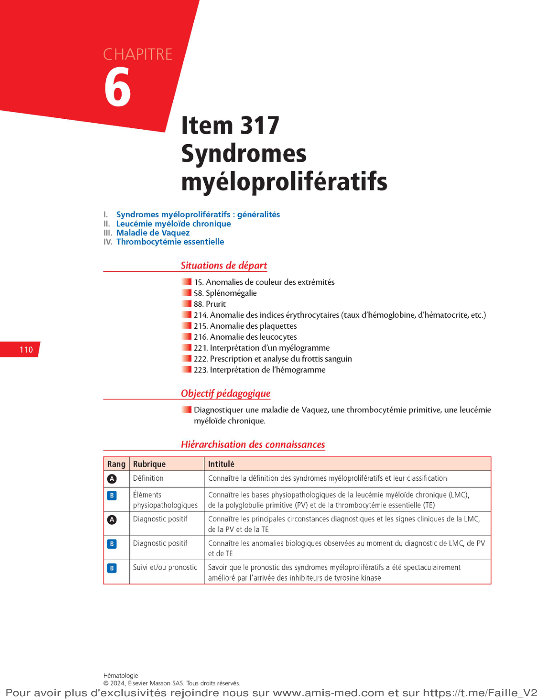
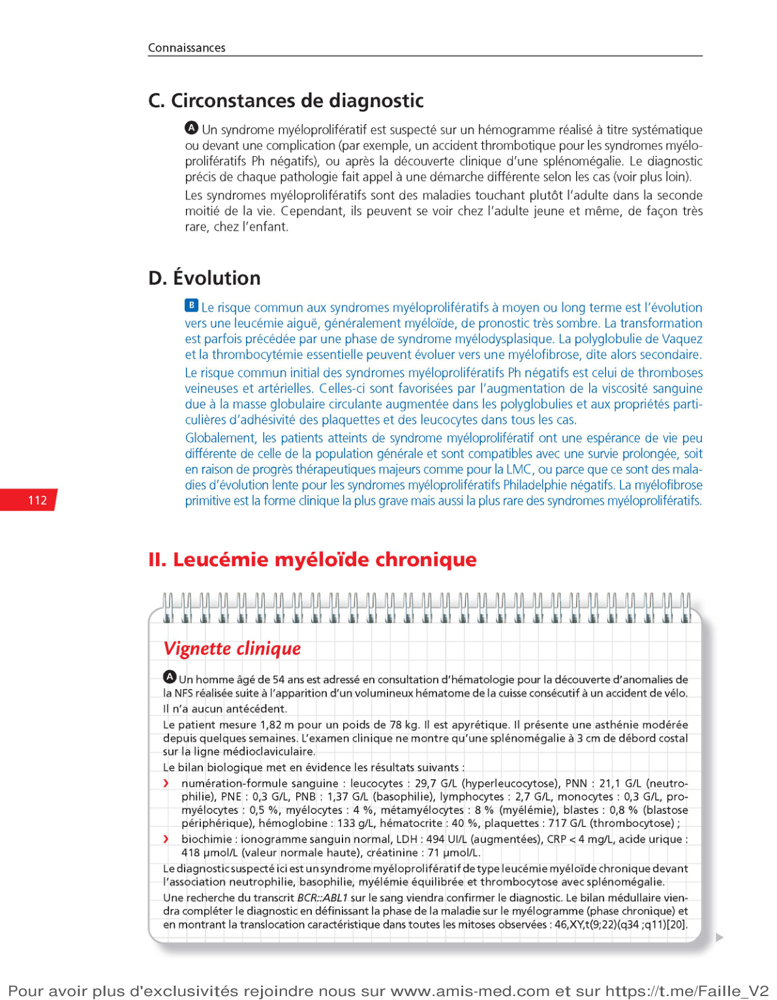
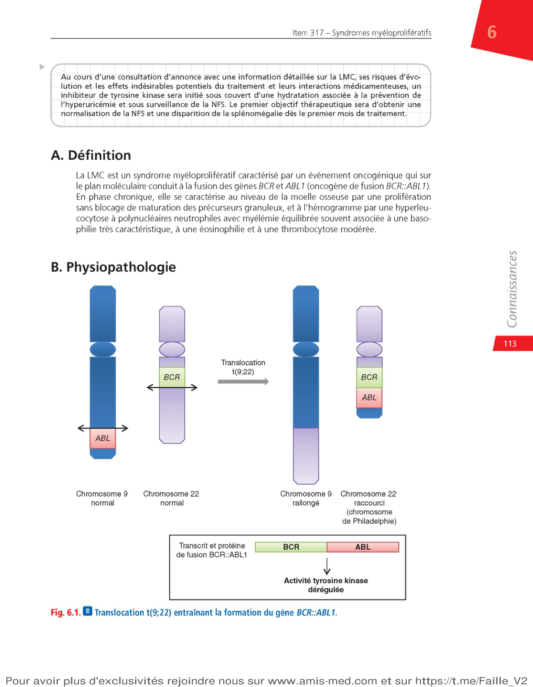
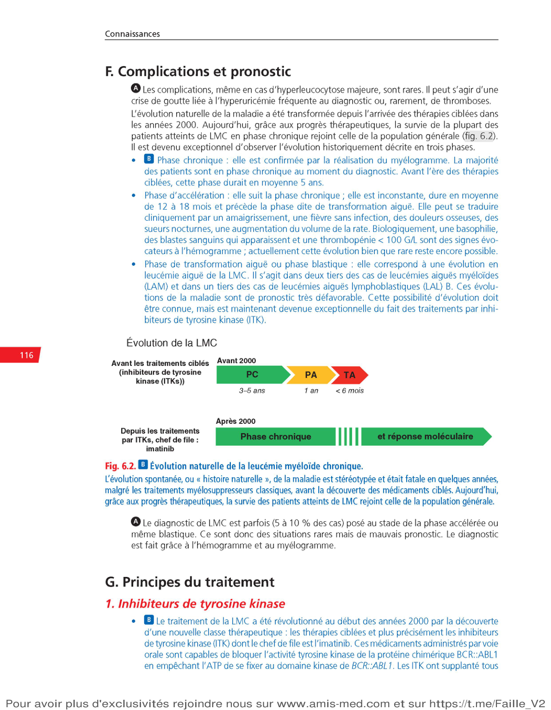
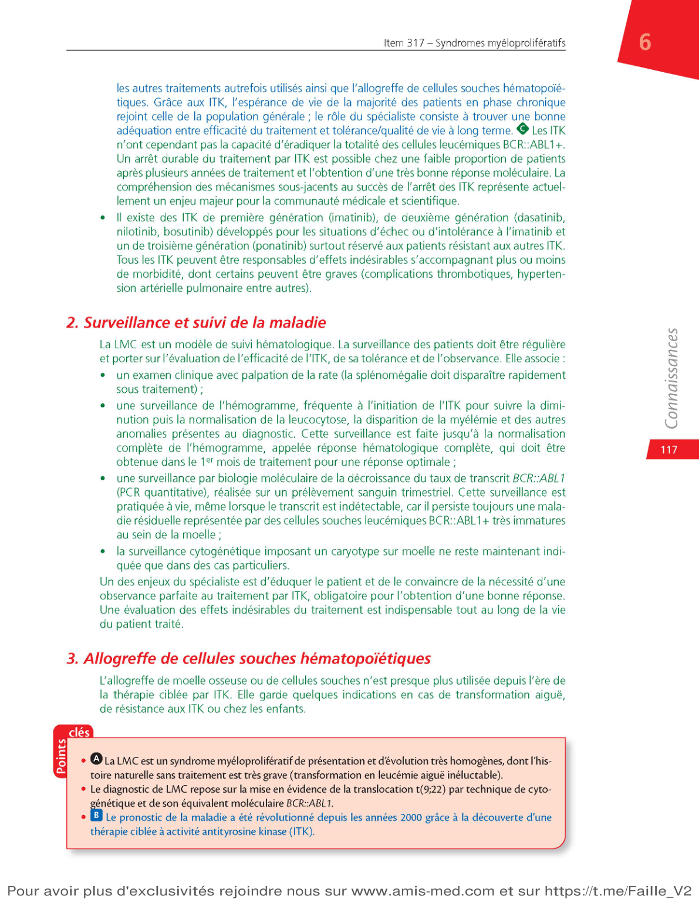
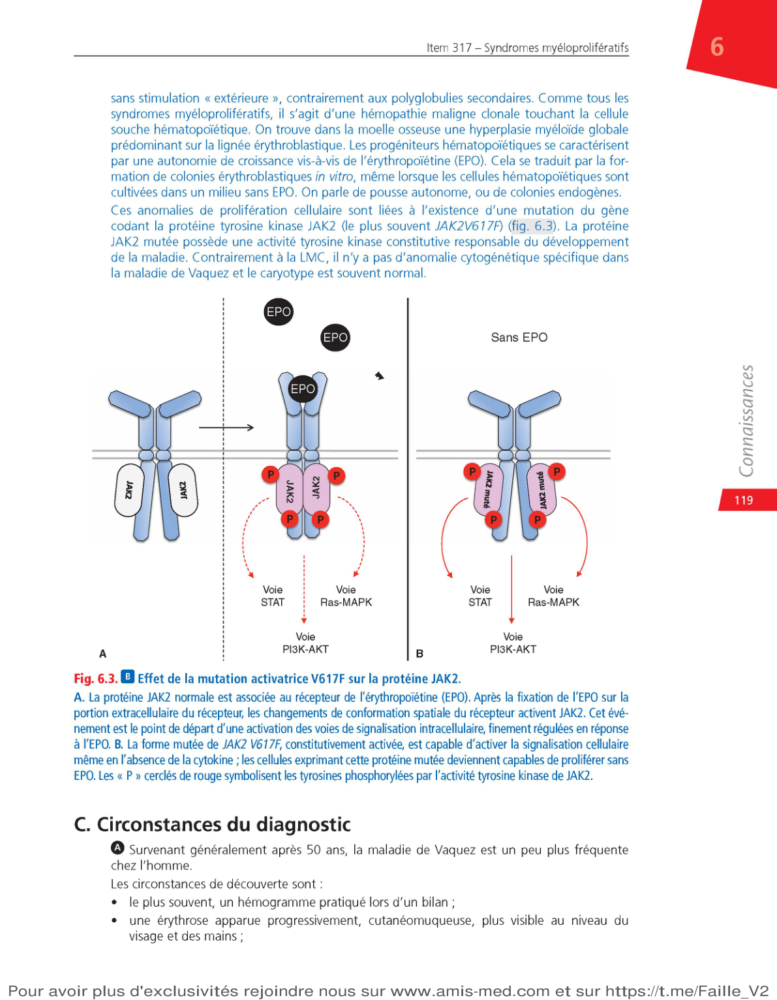
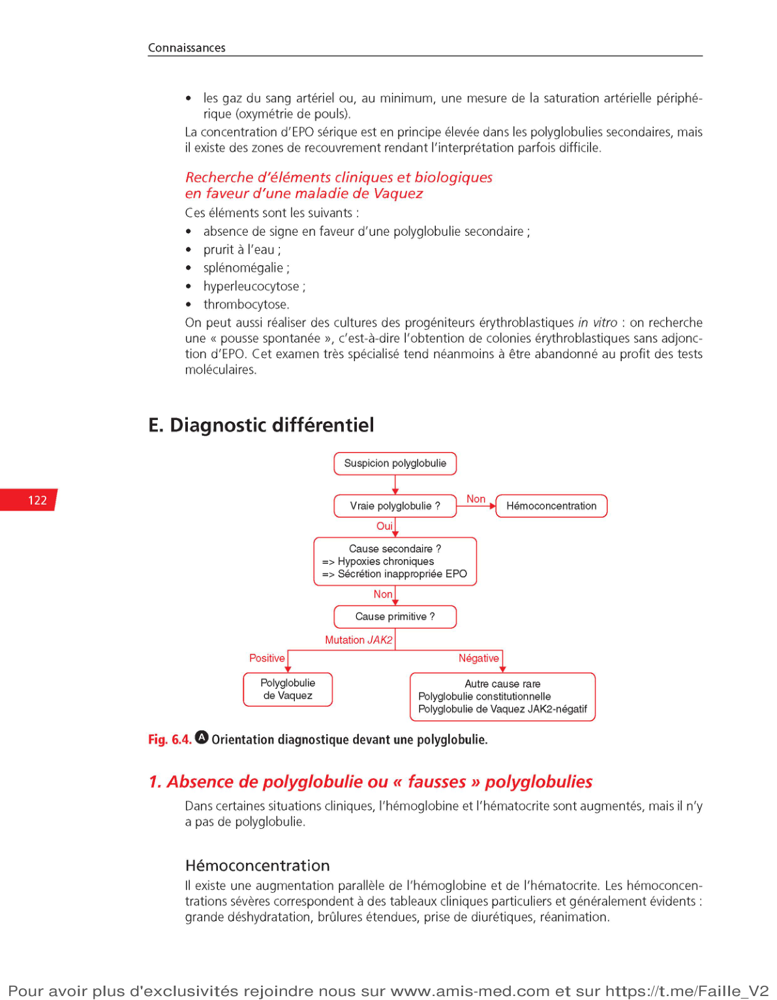

LMC (Ph+) et Vaquez, TE, MFP (Ph−). Tous sont des hémopathies malignes chroniques clonales de la lignée myéloïde.
Q2
Quel item ECN regroupe les syndromes myéloprolifératifs ?
👆 Appuyer pour révéler
Item 317
L'item 317 couvre la LMC, la maladie de Vaquez et la thrombocytémie essentielle. La myélofibrose primitive est aussi incluse dans ce groupe.
Q3
Quelle situation de départ correspond à une splénomégalie ?
👆 Appuyer pour révéler
Situation de départ 58
La splénomégalie est commune à tous les SMP. C'est souvent le signe clinique orienteur qui amène à prescrire un hémogramme.
Q4
Quel est l'objectif pédagogique principal de l'item 317 ?
👆 Appuyer pour révéler
Diagnostiquer une maladie de Vaquez, une thrombocytémie primitive et une leucémie myéloïde chronique
L'item 317 est centré sur la démarche diagnostique devant une anomalie de l'hémogramme (hyperleucocytose, polyglobulie ou hyperplaquettose).
Hiérarchisation des connaissances
Rang
Rubrique
Intitulé
A
Définition
Connaître la définition des SMP et leur classification
B
Physiopathologie
Connaître les bases physiopathologiques de la LMC, de la polyglobulie primitive (PV) et de la thrombocytémie essentielle (TE)
A
Diagnostic positif
Connaître les circonstances diagnostiques et les signes cliniques de la LMC, de la PV et de la TE
B
Diagnostic positif
Connaître les anomalies biologiques observées au moment du diagnostic de LMC, de PV et de TE
B
Suivi et pronostic
Savoir que le pronostic des SMP a été spectaculairement amélioré par l'arrivée des inhibiteurs de tyrosine kinase
Point clé pédagogique
Les SMP sont des pathologies chroniques diagnostiquées principalement à l'hémogramme. Leur physiopathologie repose sur des anomalies génétiques (tyrosine kinases) qui constituent des cibles thérapeutiques majeures.
🃏 Quiz Flash – Hiérarchisation des connaissances
Appuyez sur chaque carte pour révéler la réponse
Q1
Quel est le rang de connaissance pour définir et classer les SMP ?
👆 Appuyer pour révéler
Rang A — connaissance indispensable à tout étudiant
La définition et la classification sont rang A : nommer les 4 SMP et comprendre leurs manifestations principales.
Q2
Quel est le rang pour les bases physiopathologiques des SMP (BCR::ABL1, JAK2) ?
👆 Appuyer pour révéler
Rang B
La physiopathologie moléculaire (BCR::ABL1, JAK2 V617F, CALR, MPL) est rang B : utile mais non indispensable en détail.
Q3
Quel traitement a spectaculairement amélioré le pronostic de la LMC depuis 2001 ?
👆 Appuyer pour révéler
Les inhibiteurs de tyrosine kinase (ITK) — imatinib en tête de file
L'imatinib a transformé la LMC d'une maladie mortelle en une pathologie chronique compatible avec une vie quasi normale.
Q4
Quel est le rang pour connaître les circonstances cliniques de la LMC, Vaquez et TE ?
👆 Appuyer pour révéler
Rang A
Les circonstances de diagnostic (hémogramme fortuit, signe clinique, complication inaugurale) sont rang A. À connaître.
Vue d'ensemble – Les 4 SMP classiques

Page de référence – Classification et plan du cours
LMC
Lignée granuleuse BCR::ABL1 / t(9;22)
Maladie de Vaquez
Lignée érythroblastique JAK2 V617F (>95%)
Thrombocytémie essentielle
Lignée mégacaryocytaire JAK2 / CALR / MPL
Myélofibrose primitive
Fibrose médullaire JAK2 / CALR / MPL
🃏 Quiz Flash – Vue d'ensemble
Appuyez sur chaque carte pour révéler la réponse
Q1
Quelle lignée cellulaire est atteinte dans la LMC, et quelle en est la manifestation biologique ?
👆 Appuyer pour révéler
Lignée granuleuse → hyperleucocytose avec myélémie + basophilie
La myélémie = présence de précurseurs granuleux dans le sang. La basophilie est quasi-constante dans la LMC.
Q2
Quelle mutation est retrouvée dans plus de 95 % des maladies de Vaquez ?
👆 Appuyer pour révéler
Mutation JAK2 V617F (valine → phénylalanine, gain de fonction)
JAK2 V617F active la voie JAK-STAT en permanence, stimulant la prolifération érythroïde indépendamment de l'EPO.
Q3
Quel chromosome anormal est caractéristique de la LMC, et comment se forme-t-il ?
👆 Appuyer pour révéler
Chromosome Philadelphie (chr 22 raccourci) — issu de la translocation t(9;22) → fusion BCR::ABL1
Le chromosome Philadelphie est présent dans 100 % des LMC. Sa détection par caryotype ou PCR est indispensable au diagnostic.
Q4
Quelles mutations alternatives à JAK2 retrouve-t-on dans les SMP Ph négatifs ?
👆 Appuyer pour révéler
CALR (calréticuline, ~25 %) et MPL (récepteur TPO, ~5-8 %)
Dans la TE et la MFP JAK2-négatifs, on recherche CALR puis MPL. Un triple négatif (15 %) n'exclut pas le diagnostic.
Section I
Syndromes Myéloprolifératifs Généralités
Définition · Classification · Physiopathologie commune · Circonstances de diagnostic · Évolution
Définition et classification des SMP
Définition (rang A)
Les syndromes myéloprolifératifs (SMP) — aussi appelés néoplasies myéloprolifératives — sont des hémopathies malignes chroniques caractérisées par une hyperproduction de cellules myéloïdes matures par la moelle osseuse. Les cellules produites sont morphologiquement normales (pas de blocage de maturation, contrairement aux leucémies aiguës).
Sur l'hémogramme, les SMP se traduisent par une augmentation des cellules circulantes. Cliniquement, ils causent souvent une splénomégalie et pour certains un risque accru de thromboses. À long terme, tous présentent un risque de transformation en leucémie aiguë.
La recherche se fait dans cet ordre. Un triple négatif (~15 %) n'exclut pas la TE si tous les autres critères OMS sont remplis.
Physiopathologie commune des SMP
Principe fondamental
Les SMP sont des maladies acquises et clonales : elles prennent naissance dans une unique cellule souche hématopoïétique, au sein de laquelle survient une mutation génétique activatrice. Toutes les cellules descendant de ce clone partagent cette anomalie.
Cette anomalie génétique active de façon constitutive (permanente, sans stimulation externe) des voies de signalisation intracellulaire, conduisant à la prolifération anormale d'une ou plusieurs lignées myéloïdes. Contrairement aux leucémies aiguës, la maturation reste normale : les cellules produites en excès sont morphologiquement normales.
🔑 Mécanisme central : activation de tyrosine kinases
Les anomalies oncogéniques des SMP dérégulent des protéines à activité tyrosine kinase
Ces protéines phosphorylent en permanence leurs substrats → signal de prolifération continu
LMC : protéine de fusion BCR::ABL1 (tyrosine kinase constitutivement active)
Production excessive de cellules matures d'une ou plusieurs lignées
L'anomalie est retrouvée dans toutes les cellules matures myéloïdes du clone
Prolifération sans blocage de maturation ≠ leucémie aiguë
La cellule souche leucémique persiste même sous traitement (maladie résiduelle)
🃏 Quiz Flash – Physiopathologie commune
Appuyez sur chaque carte pour révéler la réponse
Q1
Quel mécanisme moléculaire est commun à tous les SMP ?
👆 Appuyer pour révéler
Activation constitutive de protéines à activité tyrosine kinase → signal de prolifération permanent sans stimulation externe
LMC : BCR::ABL1 (TK constitutive). SMP Ph− : JAK2 muté. Les deux activent en permanence les mêmes voies de prolifération.
Q2
Que signifie l'activation constitutive d'une tyrosine kinase ?
👆 Appuyer pour révéler
La kinase est active en permanence, sans besoin d'un ligand (facteur de croissance) pour déclencher son activité
Normalement, JAK2 est activé seulement par l'EPO ou la TPO. Muté V617F, il s'active seul → prolifération autonome.
Q3
La cellule leucémique SMP est-elle morphologiquement anormale dans le sang ?
👆 Appuyer pour révéler
Non — au stade chronique, les cellules sont matures et morphologiquement normales. Seul leur nombre est excessif.
C'est pourquoi le diagnostic repose sur l'hémogramme (quantitatif) ET la biologie moléculaire, pas sur la morphologie.
Q4
Quelle voie de signalisation est activée par JAK2 V617F ?
👆 Appuyer pour révéler
Voie JAK-STAT (principalement STAT5) → transcription de gènes de prolifération et de survie
JAK2 active STAT5 → facteurs anti-apoptotiques (Bcl-xL) et prolifération. Le ruxolitinib est un inhibiteur de JAK1/2 utilisé dans la MFP.
Les deux grandes voies oncogéniques des SMP
🔴 BCR::ABL1 – Spécifique à la LMC
La translocation t(9;22) juxtapose le gène BCR (chr 22) et l'oncogène ABL1 (chr 9). Le produit, la protéine de fusion BCR::ABL1, possède une activité tyrosine kinase constitutivement activée qui :
Stimule la prolifération des précurseurs granuleux
Inhibe l'apoptose (cellules résistantes à la mort)
Réduit l'adhésion au stroma médullaire → myélémie (passage sanguin des précurseurs)
Cette anomalie cytogénétique est présente dans 100% des LMC et constitue le marqueur diagnostique et de suivi.
🟦 JAK2 V617F – Commun aux SMP Ph négatifs
La mutation V617F du gène JAK2 modifie le domaine inhibiteur de la protéine JAK2. La protéine mutée devient constitutivement active :
Active les voies JAK-STAT, PI3K-AKT, MAPK en permanence
Les cellules prolifèrent sans stimulation par leurs cytokines habituelles (EPO, TPO…)
Retrouvée dans : >95% des Vaquez, ~50% des TE, ~50% des MFP
D'autres mutations existent : CALR et MPL dans la TE et la MFP. Toutes activent la voie JAK-STAT.
Implication thérapeutique majeure
Ces anomalies sont des cibles thérapeutiques : les inhibiteurs de tyrosine kinase (ITK) bloquent BCR::ABL1 dans la LMC, et le ruxolitinib cible JAK1/JAK2 dans les SMP Ph négatifs.
🃏 Quiz Flash – BCR::ABL1 vs JAK2
Appuyez sur chaque carte pour révéler la réponse
Q1
Comment se forme la protéine BCR::ABL1 et où sont localisés les gènes partenaires ?
👆 Appuyer pour révéler
Translocation t(9;22) : ABL1 (chr 9) se fusionne avec BCR (chr 22) → protéine de fusion BCR::ABL1
Le chr 22 résultant est plus court (chromosome Philadelphie). BCR::ABL1 code une tyrosine kinase constitutivement active.
Q2
Quel acide aminé est substitué dans JAK2 V617F et quel est le type de mutation ?
👆 Appuyer pour révéler
Valine 617 → Phénylalanine — mutation ponctuelle somatique, gain de fonction
V617F lève l'autoinhibition de JAK2. La mutation est somatique (acquise), non héréditaire, retrouvée dans les cellules myéloïdes.
Q3
Quels sont les 2 effets de BCR::ABL1 au-delà de la simple prolifération ?
👆 Appuyer pour révéler
Inhibition de l'apoptose + réduction de l'adhésion des précurseurs à la matrice médullaire (→ myélémie)
La myélémie (précurseurs granuleux dans le sang) s'explique par ce défaut d'adhésion à la niche médullaire.
Q4
Quelle mutation alternative à JAK2 retrouve-t-on dans ~25 % des TE et MFP JAK2-négatifs ?
👆 Appuyer pour révéler
Mutation CALR (calréticuline), exon 9 — insertion ou délétion
CALR muté active le récepteur MPL (thrombopoïétine) → prolifération mégacaryocytaire. Pronostic souvent meilleur que JAK2+.
Circonstances de diagnostic des SMP
Un SMP est suspecté dans trois types de situations cliniques, qui diffèrent selon la pathologie en cause :
📊 1. Hémogramme systématique (le plus fréquent)
La plupart des SMP sont découverts fortuitement à l'occasion d'un bilan biologique de routine, chez un patient asymptomatique. C'est le cas pour environ 40% des LMC, et la majorité des thrombocytémies essentielles.
🩺 2. Signe clinique orienteur
Splénomégalie → commune à tous les SMP
Érythrose faciale / prurit aquagénique → maladie de Vaquez
Thrombose (veineuse ou artérielle, parfois splanchnique) → Vaquez, TE
AVC, AIT → Vaquez (hyperviscosité)
Syndrome d'hyperviscosité → LMC (leucostase) ou Vaquez
Une thrombose splanchnique doit toujours faire rechercher une mutation JAK2
Population touchée
Les SMP touchent principalement l'adulte dans la seconde moitié de la vie (médiane : 60 ans pour la LMC, >50 ans pour Vaquez/TE). Ils peuvent survenir à tout âge, avec des cas pédiatriques très rares.
🃏 Quiz Flash – Circonstances de diagnostic
Appuyez sur chaque carte pour révéler la réponse
Q1
Dans quel contexte diagnostique sont découverts environ 40 % des SMP ?
👆 Appuyer pour révéler
Découverte fortuite sur hémogramme de routine chez un patient asymptomatique
C'est le mode de présentation le plus fréquent : bilan préopératoire, médecine du travail, suivi d'une autre pathologie.
Q2
Quel signe clinique est commun à tous les SMP, et quel en est le mécanisme ?
👆 Appuyer pour révéler
Splénomégalie — due à l'hématopoïèse extramédullaire et à la congestion par hyperviscosité
La splénomégalie est modérée dans la TE, importante dans la LMC et Vaquez, massive dans la MFP. Elle peut causer une gêne abdominale.
Q3
Quel symptôme est quasi-pathognomonique de la maladie de Vaquez ?
👆 Appuyer pour révéler
Prurit aquagénique (aggravé par l'eau chaude — douche, bain)
Résulte de la dégranulation mastocytaire activée par JAK2 muté. Peut précéder le diagnostic de plusieurs années.
Q4
Quelle complication inaugurale doit toujours faire rechercher une mutation JAK2 ?
👆 Appuyer pour révéler
Toute thrombose splanchnique : Budd-Chiari, thrombose porte ou mésentérique — même si l'hémogramme est normal
La mutation JAK2 peut être présente même quand l'hémogramme est peu perturbé. C'est le point ECN à ne pas manquer.
Évolution commune et risques partagés des SMP
⚠️ Risque majeur à long terme commun à TOUS les SMPTransformation en leucémie aiguë (généralement myéloïde = LAM), de pronostic très sombre. La transformation peut être précédée d'une phase de syndrome myélodysplasique.
🩸 Risques spécifiques à la LMC
Évolution en 3 phases : chronique → accélérée → blastique
Hyperleucocytose majeure : rarement leucostase
Depuis les ITK : espérance de vie quasi-normale
🔴 Risques spécifiques aux SMP Ph négatifs
Thromboses veineuses et artérielles (risque précoce majeur)
Hémorragies (notamment si thrombocytose très importante)
Évolution en myélofibrose secondaire (Vaquez et TE)
Puis transformation en LAM (tardive, après 10-20 ans)
Pronostic global rassurant
Globalement, les patients atteints de SMP ont une espérance de vie peu différente de la population générale, soit grâce aux ITK (LMC), soit en raison de l'évolution lente des SMP Ph négatifs. La myélofibrose primitive est la forme la plus grave mais aussi la plus rare.
🃏 Quiz Flash – Évolution commune des SMP
Appuyez sur chaque carte pour révéler la réponse
Q1
En quoi consistent les 3 phases évolutives de la LMC non traitée ?
Depuis les ITK, la phase blastique est devenue exceptionnelle. La LMC est contrôlée en phase chronique dans >95 % des cas.
Q2
Quel seuil de blastes médullaires définit la transformation en leucémie aiguë (phase blastique) ?
👆 Appuyer pour révéler
≥ 20 % de blastes dans la moelle ou le sang périphérique
C'est le même critère que pour définir une LAM selon l'OMS. Avant 20 %, avec signes d'accélération, on parle de phase accélérée.
Q3
Vers quelle pathologie les SMP Ph négatifs évoluent-ils avant la LAM ?
👆 Appuyer pour révéler
Myélofibrose secondaire (post-Vaquez ou post-TE), puis transformation en LAM
La myélofibrose secondaire aggrave la splénomégalie et produit des cytopénies progressives. Elle survient après 10-20 ans.
Q4
Quelle est l'espérance de vie d'un patient atteint de LMC bien contrôlée sous ITK ?
👆 Appuyer pour révéler
Quasi-normale — comparable à la population générale appariée en âge
C'est la révolution des ITK. La TE à bas risque a aussi une espérance de vie quasi-normale. La MFP primitive reste la plus grave.
Aperçu histologique et biologique – Généralités

Circonstances de diagnostic et évolution des SMP
À retenir
Le diagnostic précis de chaque SMP nécessite une démarche spécifique : hémogramme + biologie moléculaire (PCR BCR::ABL1 pour LMC, mutation JAK2/CALR/MPL pour SMP Ph négatifs) ± myélogramme ± biopsie ostéomédullaire.
🃏 Quiz Flash – Démarche diagnostique globale
Appuyez sur chaque carte pour révéler la réponse
Q1
Quels sont les 3 examens clés pour diagnostiquer un SMP ?
Quelle anomalie oncogénique caractérise la LMC et comment agit-elle ?
👆 Appuyer pour révéler la réponse
Translocation t(9;22) → oncogène de fusion BCR::ABL1 → tyrosine kinase constitutivement active
Le chromosome Philadelphie (chr 22 raccourci) est présent dans 100% des LMC. BCR::ABL1 stimule la prolifération granuleuse, inhibe l'apoptose et réduit l'adhésion médullaire (→ myélémie).
Q3
Quelle mutation est commune aux SMP Philadelphie négatifs ? Dans quels pourcentages la retrouve-t-on ?
👆 Appuyer pour révéler la réponse
Mutation JAK2 V617F : >95% des Vaquez, ~50% des TE, ~50% des MFP
JAK2 V617F active constitutivement les voies JAK-STAT. Dans la TE et MFP JAK2 négatifs, on cherche CALR (~25%) puis MPL (~5%). Un triple négatif représente ~15% des TE.
Q4
Quel est le risque évolutif commun à TOUS les SMP à long terme ?
👆 Appuyer pour révéler la réponse
Transformation en leucémie aiguë myéloïde (LAM), de pronostic très sombre
Pour la LMC : maintenant exceptionnel grâce aux ITK. Pour Vaquez/TE : survient après 10-20 ans d'évolution. Pour MFP : risque plus précoce. La transformation peut être précédée d'un syndrome myélodysplasique.
📝 QCM – Section I : Généralités
Q1Quelle est la caractéristique commune à tous les syndromes myéloprolifératifs ?
Les SMP se distinguent des leucémies aiguës par l'absence de blocage de maturation : les cellules produites en excès sont morphologiquement normales. L'insuffisance médullaire et les anomalies morphologiques caractérisent les syndromes myélodysplasiques.
Q2Quelle anomalie génétique est pathognomonique de la LMC ?
La LMC est définie par la translocation t(9;22) → chromosome Philadelphie → fusion BCR::ABL1. Cette anomalie est présente dans 100% des cas. JAK2, CALR, MPL caractérisent les SMP Ph négatifs.
Q3Parmi les propositions suivantes, laquelle est vraie concernant les SMP Ph négatifs ?
Les SMP Ph négatifs (Vaquez, TE, MFP) sont souvent associés à JAK2 (V617F), CALR ou MPL. Leur caryotype est souvent normal. Ils ont tous un risque de transformation LAM à long terme.
Q4Quel est le risque commun et précoce propre aux SMP Ph négatifs (non partagé par la LMC) ?
Le risque thrombotique (artériel et veineux) est le risque précoce majeur des SMP Ph négatifs, favorisé par l'hyperviscosité, l'hyperplaquettose et des anomalies qualitatives des cellules sanguines.
Q5Dans quel contexte doit-on systématiquement rechercher une mutation JAK2 V617F ?
La thrombose splanchnique (veine porte, veines sus-hépatiques = syndrome de Budd-Chiari) peut révéler un SMP Ph négatif, même si l'hémogramme est normal ou peu modifié. La recherche de JAK2 est systématique dans ce contexte.
Q6La maladie de Vaquez peut évoluer vers (2 réponses correctes) :
Les SMP Ph négatifs (Vaquez, TE) peuvent évoluer vers une myélofibrose secondaire, puis vers une leucémie aiguë myéloïde. Ces évolutions tardives surviennent généralement après 10-20 ans.
Q7Les SMP sont des maladies :
Les SMP sont des maladies acquises (survenant au cours de la vie) et clonales (issues d'une seule cellule souche anormale). Rares cas de LMC secondaires à une exposition au benzène ou aux radiations ionisantes.
Q8Quelle est la forme la plus grave des SMP classiques ?
La myélofibrose primitive est la forme la plus grave (et la plus rare) des SMP classiques. La TE est la moins grave, avec une espérance de vie quasi-normale.
Q9Quelle classe thérapeutique a révolutionné le traitement de la LMC depuis les années 2000 ?
Les ITK (imatinib de 1ère génération) ont transformé le pronostic de la LMC : l'espérance de vie rejoint désormais celle de la population générale. L'allogreffe n'est plus utilisée qu'exceptionnellement.
Q10Un SMP est suspecté à l'occasion d'une thrombose veineuse splanchnique. Quel examen demander en 1ère intention ?
Devant une thrombose splanchnique (Budd-Chiari, thrombose portale), la mutation JAK2 V617F est le premier examen à demander — même si l'hémogramme est normal ou peu perturbé. C'est un test sanguin simple et rapide.
🏥 Dossier Progressif – Généralités SMP
📋 Cas clinique
M. A., 45 ans, sans antécédent notable, consulte pour un bilan d'asthénie d'apparition progressive depuis 3 mois. L'examen clinique retrouve une splénomégalie à 4 cm de débord costal. La NFS systématique réalisée montre : leucocytes 48 G/L avec PNN 35 G/L, myélémie (métamyélocytes + myélocytes), PNB 1,8 G/L, plaquettes 720 G/L, Hb 128 g/L. LDH augmentées. CRP normale.
Q1Quel type de syndrome myéloprolifératif doit être suspecté en 1ère intention ?
L'association hyperleucocytose + myélémie équilibrée + basophilie (1.8 G/L) + thrombocytose + splénomégalie est très évocatrice de LMC. La basophilie est le signe le plus spécifique.
Q2Quel examen demander en urgence pour confirmer le diagnostic ?
La PCR BCR::ABL1 sur sang est l'examen diagnostique de la LMC. Un hémogramme évocateur associé à une PCR positive suffit pour affirmer le diagnostic. La JAK2 et l'EPO sont pour Vaquez/TE.
Q3Pourquoi est-il obligatoire de réaliser un myélogramme dans ce cas ?
Le myélogramme est obligatoire pour : (1) confirmer la phase chronique (% blastes médullaires <10%), (2) réaliser le caryotype avec recherche de t(9;22) et d'anomalies cytogénétiques additionnelles pronostiques.
Q4Quel est le mécanisme par lequel BCR::ABL1 entraîne une myélémie (présence de précurseurs granuleux dans le sang) ?
BCR::ABL1 réduit l'expression des molécules d'adhésion (intégrines) des précurseurs granuleux au stroma médullaire. Ces précurseurs sont libérés prématurément dans le sang → myélémie. La maturation reste normale (pas de hiatus leucémique).
Q5Quelle classe thérapeutique sera initiée, et quel objectif doit être atteint au premier mois ?
L'imatinib (ITK 1ère génération) est le traitement de 1ère ligne. L'objectif au 1er mois est la réponse hématologique complète : normalisation de la NFS (leucocytes, plaquettes) et disparition de la splénomégalie.
Résumé – Section I : Généralités à retenir
✅ Points essentiels – Généralités SMP
Les SMP sont des hémopathies malignes chroniques clonales, issues d'une mutation d'une cellule souche hématopoïétique → hyperproduction de cellules myéloïdes matures
📋 Vignette clinique (ECN type)
Homme 54 ans, hématome de cuisse après accident de vélo → NFS : leucocytes 29,7 G/L, PNN 21,1 G/L, basophiles 1,37 G/L, myélémie (métamyélocytes + myélocytes), blastes 0,8%, Hb 133 g/L, plaquettes 717 G/L. Splénomégalie 3 cm. LDH élevées. ✓ Recherche BCR::ABL1 positive → LMC confirmée. Myélogramme : phase chronique. Caryotype : 46,XY,t(9;22).
Définition de la LMC
La LMC est un SMP caractérisé par l'oncogène de fusion BCR::ABL1, issu de la translocation t(9;22). Elle se manifeste par une hyperproduction de la lignée granuleuse avec, à l'hémogramme, une hyperleucocytose à PNN avec myélémie équilibrée, basophilie et thrombocytose modérée.
Épidémiologie
800–900 nouveaux cas/an en France. Médiane d'âge : 60 ans. Sex-ratio H/F : 1,3. Peut survenir à tout âge (rares cas pédiatriques). Facteurs causaux rares : benzène, radiations ionisantes.
🃏 Quiz Flash – LMC — Définition
Appuyez sur chaque carte pour révéler la réponse
Q1
Définissez la LMC en une phrase clé.
👆 Appuyer pour révéler
Hémopathie maligne clonale de la cellule souche hématopoïétique, définie par t(9;22)/BCR::ABL1, responsable d'une hyperleucocytose avec myélémie et basophilie
La LMC est une entité biologique précisément définie par son anomalie génétique. Le Philadelphie est présent dans 100 % des cas.
Q2
Qu'est-ce qu'une myélémie, et pourquoi la retrouve-t-on dans la LMC ?
👆 Appuyer pour révéler
Présence de précurseurs granuleux (métamyélocytes, myélocytes, promyélocytes) dans le sang périphérique
La myélémie résulte du défaut d'adhésion à la niche médullaire induit par BCR::ABL1. La maturation est conservée (≠ leucémie aiguë).
Q3
Quel élément biologique différencie immédiatement la LMC d'une hyperleucocytose réactionnelle ?
👆 Appuyer pour révéler
La basophilie (augmentation des basophiles) — quasi-constante dans la LMC, absente dans les réactions infectieuses
Basophiles > 1 % (ou simplement augmentés) est un signal d'alarme pour la LMC. Dans les infections, seuls les neutrophiles augmentent.
Q4
Quel chromosome anormal est pathognomonique de la LMC ?
👆 Appuyer pour révéler
Chromosome Philadelphie (chr 22 raccourci), issu de la translocation t(9;22)
Présent dans 100 % des LMC. Sa détection au caryotype + la PCR BCR::ABL1 confirment le diagnostic.
LMC – Physiopathologie : translocation t(9;22)

Fig. 6.1 – Formation du gène de fusion BCR::ABL1 par translocation t(9;22)
La LMC est due à une anomalie cytogénétique acquise survenant dans une cellule souche hématopoïétique : la translocation réciproque et équilibrée t(9;22)(q34;q11). Le chromosome 22 raccourci qui en résulte est appelé chromosome de Philadelphie (Ph), découvert en 1960 à Philadelphie.
🔬 Sur le plan moléculaire
Le début du gène BCR (chr 22) est juxtaposé à la fin de l'oncogène ABL1 (chr 9)
Il se forme un ARN de fusion → traduit en protéine chimérique BCR::ABL1
Cette protéine possède une activité tyrosine kinase constitutive (toujours active, sans stimulation)
⚙️ Conséquences biologiques
Prolifération excessive des précurseurs granuleux
Diminution de l'apoptose → accumulation de cellules
Perte d'adhérence au stroma médullaire → myélémie (passage sanguin de précurseurs)
Activation de nombreuses voies de signalisation (PI3K-AKT, RAS-MAPK, STAT5…)
🃏 Quiz Flash – Physiopathologie BCR::ABL1
Appuyez sur chaque carte pour révéler la réponse
Q1
Quel gène est situé sur le chromosome 9 dans la translocation t(9;22) de la LMC ?
Lignée plaquettaire : thrombocytose modérée souvent présente, parfois prédominante
Splénomégalie : variable, à mesurer en cm sur la ligne médioclaviculaire
🃏 Quiz Flash – Hémogramme de la LMC
Appuyez sur chaque carte pour révéler la réponse
Q1
Quelle est la leucocytose typique au diagnostic de la LMC ?
👆 Appuyer pour révéler
Souvent > 50 G/L, pouvant dépasser 100-200 G/L
La leucocytose est le signe cardinal. Elle peut être découverte fortuitement ou révélée par des signes de leucostase si très importante.
Q2
Quel signe de l'hémogramme est quasi-pathognomonique de la LMC ?
👆 Appuyer pour révéler
Basophilie (augmentation des basophiles > 1 % et souvent > 5 %)
La basophilie est retrouvée dans pratiquement toutes les LMC. C'est le premier signe à chercher face à une hyperleucocytose.
Q3
Les plaquettes sont-elles typiquement augmentées, normales ou abaissées dans la LMC ?
👆 Appuyer pour révéler
Souvent augmentées (thrombocytose modérée) au diagnostic — normales ou élevées, rarement abaissées
La thrombocytose est fréquente. Une thrombopénie profonde orienterait plutôt vers une phase avancée ou un diagnostic alternatif.
Q4
Qu'est-ce qu'une myélémie 'avec hiatus de maturation' et dans quelle pathologie l'observe-t-on ?
👆 Appuyer pour révéler
Hiatus = absence d'un stade de maturation entre les blastes et les cellules matures → signe de leucémie aiguë
Dans la LMC, la myélémie est SANS hiatus (tous les stades présents). Un hiatus impose d'éliminer une leucémie aiguë.
LMC – Démarche diagnostique
Examen clé : recherche du transcrit BCR::ABL1 par PCR sur sang
Un hémogramme évocateur + PCR BCR::ABL1 positive = diagnostic de LMC affirmé. C'est simple, rapide, non invasif.
Un myélogramme est cependant toujours obligatoire pour compléter le bilan initial, même si le diagnostic moléculaire est déjà affirmé :
🔬 Myélogramme – Objectifs
Définir la phase de la maladie par le pourcentage de blastes médullaires :
Phase chronique : blastes < 10%
Phase accélérée : blastes 10–19%
Phase blastique : blastes ≥ 20%
Caryotype médullaire : confirmation de t(9;22) (Ph présent dans 100% des LMC) et recherche d'anomalies cytogénétiques additionnelles (pronostic)
📋 Bilan complémentaire
Biochimie : LDH (augmentées), acide urique (↑ → risque de crise de goutte, prévenir), ionogramme, créatinine
Biopsie ostéomédullaire : non systématique dans la LMC (contrairement aux autres SMP)
Formes atypiques
Rarement, la LMC peut se présenter comme une thrombocytose isolée ou une hyperleucocytose sans myélémie. La PCR BCR::ABL1 permet le diagnostic dans ces formes frontières.
🃏 Quiz Flash – Démarche diagnostique LMC
Appuyez sur chaque carte pour révéler la réponse
Q1
Quel est l'examen clé pour confirmer le diagnostic de LMC ?
👆 Appuyer pour révéler
PCR BCR::ABL1 quantitative sur sang périphérique
La PCR est sensible, spécifique et permet aussi le suivi de la réponse au traitement. Elle remplace le caryotype en pratique courante.
Q2
La biopsie ostéomédullaire est-elle indispensable au diagnostic initial de la LMC ?
👆 Appuyer pour révéler
Non — la PCR BCR::ABL1 sur sang périphérique est suffisante
Le myélogramme peut être réalisé pour évaluer le % de blastes (phase) mais n'est pas indispensable pour initier le traitement.
Q3
Que recherche-t-on au myélogramme dans la LMC ?
👆 Appuyer pour révéler
Le pourcentage de blastes — pour déterminer la phase (chronique < 10 %, accélérée 10-19 %, blastique ≥ 20 %)
La phase est déterminante pour le pronostic et la stratégie thérapeutique (ITK seul vs allogreffe).
Q4
Quel est le rôle du caryotype médullaire dans la LMC ?
👆 Appuyer pour révéler
Confirmation du chromosome Philadelphie t(9;22) — parfois complété par FISH si caryotype normal mais PCR positive
La FISH est plus sensible que le caryotype pour détecter les translocations cryptiques. Mais la PCR suffit en pratique.
Hiatus leucémique vs myélémie équilibrée
Dans la LMC, la myélémie est équilibrée : on voit des métamyélocytes et myélocytes sans hiatus (toutes les formes de maturation sont représentées). Dans une leucémie aiguë, il y a un hiatus leucémique : on voit des blastes et des cellules matures, mais pas les formes intermédiaires.
🃏 Quiz Flash – Diagnostic différentiel LMC
Appuyez sur chaque carte pour révéler la réponse
Q1
Quelle réaction médullaire peut mimer une LMC sur l'hémogramme ?
👆 Appuyer pour révéler
Réaction leucémoïde (infection sévère, cancer, corticoïdes) avec hyperleucocytose à prédominance neutrophile
Mais la réaction leucémoïde n'a PAS de basophilie ni de myélémie profonde, et la PCR BCR::ABL1 est négative.
Q2
Comment distinguer LMC d'une réaction leucémoïde en urgence ?
👆 Appuyer pour révéler
PCR BCR::ABL1 — positive dans la LMC (même à faible taux), toujours négative dans les réactions
Le score de phosphatases alcalines leucocytaires (PAL) est historiquement utilisé : abaissé dans la LMC, élevé dans les réactions.
Q3
Quelle autre SMP peut donner une hyperleucocytose et nécessite d'être différenciée de la LMC ?
👆 Appuyer pour révéler
Aucune — l'hyperleucocytose avec myélémie + basophilie est très spécifique de la LMC. Les autres SMP donnent d'autres anomalies.
Les autres SMP Ph négatifs peuvent donner une leucocytose modérée mais sans myélémie équilibrée ni basophilie.
Q4
Une mastocytose systémique peut-elle donner une basophilie mimant une LMC ?
👆 Appuyer pour révéler
Non — la mastocytose donne une augmentation des mastocytes (dans la moelle et les tissus) mais pas de myélémie équilibrée
La basophilie de la LMC est une augmentation des basophiles sanguins, distincte de l'augmentation des mastocytes médullaires.
LMC – Les 3 phases évolutives

Fig. 6.2 – Évolution naturelle de la LMC : avant et après les ITK
Révolution thérapeutique
Avant 2000 : évolution stéréotypée fatale en quelques années. Depuis les ITK (imatinib 2001) : la grande majorité des patients en phase chronique ont une espérance de vie rejoignant celle de la population générale.
🃏 Quiz Flash – Les 3 phases de la LMC
Appuyez sur chaque carte pour révéler la réponse
Q1
Citez les 3 phases évolutives de la LMC et leur caractéristique principale.
Sous ITK, la quasi-totalité des patients restent en phase chronique toute leur vie. Les transitions sont maintenant rares.
Q2
Quel pourcentage de blastes médullaires définit la phase accélérée et la phase blastique ?
👆 Appuyer pour révéler
Accélérée : 10-19 % · Blastique : ≥ 20 %
Ces seuils OMS sont à connaître. La phase blastique équivaut à une LAM de novo sur LMC — pronostic très sombre.
Q3
Quelle était la durée moyenne de la phase chronique sans traitement efficace (avant les ITK) ?
👆 Appuyer pour révéler
3 à 5 ans
Avant l'imatinib, l'évolution vers la phase blastique était inéluctable. Les ITK ont radicalement changé cette évolution.
Q4
Qu'est-ce qu'une 'crise blastique lymphoïde' dans la LMC ?
👆 Appuyer pour révéler
Transformation en LAL (lymphoblastes) plutôt qu'en LAM (myéloblastes) dans ~30 % des crises blastiques
La crise blastique peut être myéloïde (70 %) ou lymphoïde (30 %). Dans ce cas, on ajoute une chimiothérapie anti-LAL à l'ITK.
LMC – Inhibiteurs de tyrosine kinase (ITK)
Mécanisme d'action
Les ITK bloquent l'activité tyrosine kinase de BCR::ABL1 en empêchant l'ATP de se fixer au domaine kinase de BCR::ABL1. Sans ATP, BCR::ABL1 ne peut pas phosphoryler ses substrats → signal de prolifération stoppé.
Les ITK sont administrés par voie orale, quotidiennement, à vie (sauf dans les cas d'arrêt contrôlé après réponse moléculaire profonde). Ils n'éradiquent pas totalement la maladie (cellules souches leucémiques résiduelles très immatures persistent), mais la contrôlent durablement.
Effets EI potentiels graves : thromboses, HTAP (dasatinib), hypoglycémie (nilotinib)
3ème génération
Ponatinib
Réservé aux résistances aux ITK de 1ère et 2ème génération
Actif sur mutation T315I ("mutation du portier")
Risque cardiovasculaire important
Arrêt du traitement
Un arrêt durable est possible chez une faible proportion de patients après plusieurs années de traitement et l'obtention d'une très bonne réponse moléculaire (transcrit indétectable). C'est un enjeu majeur de recherche actuelle.
🃏 Quiz Flash – ITK — Mécanisme et générations
Appuyez sur chaque carte pour révéler la réponse
Q1
Quel est le mécanisme d'action des ITK dans la LMC ?
👆 Appuyer pour révéler
Inhibition compétitive de BCR::ABL1 au niveau du site de liaison à l'ATP → blocage de la phosphorylation → arrêt de la prolifération
Les ITK se fixent sur le domaine kinase de BCR::ABL1 et empêchent l'ATP de s'y lier. Sans ATP, la TK ne peut phosphoryler ses substrats.
Q2
Quel est le premier ITK approuvé pour la LMC, en quelle année ?
👆 Appuyer pour révéler
Imatinib (Glivec®) — approuvé en 2001
L'imatinib a révolutionné la prise en charge. Il a fait passer la survie à 5 ans de ~50 % à >90 %.
Q3
Pourquoi a-t-on développé des ITK de 2ème génération ?
👆 Appuyer pour révéler
Résistance à l'imatinib (mutations de BCR::ABL1, dont T315I) et meilleure tolérance
Dasatinib, nilotinib, bosutinib (2G) ; ponatinib (3G, seul actif sur T315I). La 3G est utilisée en résistance multi-ITK.
Q4
Que signifie une réponse moléculaire majeure (RMM) dans la surveillance de la LMC ?
👆 Appuyer pour révéler
BCR::ABL1 < 0,1 % sur l'échelle internationale (IS) — réduction ≥ 3 log par rapport au standard
La RMM à 12 mois est l'objectif thérapeutique de 1ère ligne. Son absence impose un changement d'ITK.
LMC – Surveillance et suivi sous traitement
La LMC est un modèle de suivi hématologique. La surveillance est triple : efficacité du traitement + tolérance + observance (indispensable pour maintenir la réponse).
📊 Surveillance hématologique
NFS fréquente à l'initiation de l'ITK
Objectif au 1er mois : réponse hématologique complète = normalisation de la NFS (leucocytes, plaquettes normaux, disparition de la myélémie) et disparition de la splénomégalie
Puis NFS mensuelle jusqu'à normalisation complète
🧬 Surveillance moléculaire (clé)
PCR quantitative BCR::ABL1 sur sang trimestrielle
Mesure la "charge tumorale résiduelle" en log de réduction
Car maladie résiduelle de cellules souches persist
🔬 Surveillance cytogénétique
Caryotype médullaire : maintenant réservé à des cas particuliers
Remplacé par la PCR moléculaire en pratique courante
⚠️ Observance obligatoire
Une des missions principales du médecin hématologue est d'éduquer le patient sur la nécessité d'une observance parfaite du traitement par ITK. Une mauvaise observance entraîne une résistance secondaire et compromet la réponse moléculaire.
🃏 Quiz Flash – Surveillance de la LMC sous ITK
Appuyez sur chaque carte pour révéler la réponse
Q1
Par quel examen surveille-t-on la réponse au traitement dans la LMC ?
👆 Appuyer pour révéler
PCR BCR::ABL1 quantitative sur sang périphérique — toutes les 3 mois puis tous les 6 mois si réponse optimale
La PCR est l'outil de surveillance principal. Elle mesure la charge moléculaire résiduelle et détecte précocement les rechutes.
BCR::ABL1 < 0,0032 % (IS) — pratiquement indétectable par les méthodes sensibles standard
La RM4.5 est l'objectif pour envisager l'arrêt d'ITK (rémission sans traitement = TFR). Requiert 2 ans de RM4.5 stable minimum.
Q3
Quand peut-on envisager l'arrêt du traitement ITK dans la LMC ?
👆 Appuyer pour révéler
Après ≥ 3-5 ans d'ITK + RM4.5 stable ≥ 2 ans, sous surveillance moléculaire rapprochée
Environ 50 % des patients en RM4.5 maintiennent la rémission sans traitement. La rechute (si elle survient) est rapidement contrôlée.
Q4
Quelle est la principale cause de résistance à l'imatinib en dehors des mutations de BCR::ABL1 ?
👆 Appuyer pour révéler
Non-observance du traitement (prise irrégulière) — première cause à investiguer
Avant d'envisager un changement d'ITK pour résistance, il faut s'assurer de l'observance et mesurer la pharmacocinétique.
LMC – Allogreffe et situations particulières
🏥 Allogreffe de cellules souches hématopoïétiques (CSH)
L'allogreffe de moelle/CSH n'est plus le traitement de référence depuis l'ère des ITK. Elle ne garde que quelques indications :
Transformation en leucémie aiguë (phase blastique)
Résistance à plusieurs ITK (notamment mutation T315I sans réponse au ponatinib)
Chez les enfants
LMC diagnostiquée en phase accélérée ou blastique (5-10%)
Situations rares mais de mauvais pronostic. Le diagnostic est fait grâce à l'hémogramme (blastes élevés) et au myélogramme. Un traitement d'induction par ITK ± chimiothérapie est nécessaire, suivi souvent d'une allogreffe.
Message clé final sur la LMC
La LMC est un SMP à présentation et évolution très homogènes. Grâce aux ITK, c'est aujourd'hui une maladie chronique bien contrôlée dont l'espérance de vie rejoint celle de la population générale pour la majorité des patients en phase chronique.

Traitement par ITK et suivi moléculaire de la LMC
🃏 Quiz Flash – Allogreffe et cas particuliers LMC
Appuyez sur chaque carte pour révéler la réponse
Q1
Quelle était la place de l'allogreffe dans la LMC avant les ITK ?
👆 Appuyer pour révéler
Seul traitement potentiellement curatif — utilisé en 1ère ligne chez les patients jeunes avec donneur compatible
Avant 2001, l'allogreffe était le traitement de référence pour les patients < 50 ans. Les ITK l'ont rendue exceptionnelle.
Q2
Dans quelles situations l'allogreffe reste-t-elle indiquée dans la LMC ?
👆 Appuyer pour révéler
Phase blastique ou accélérée réfractaire, résistance à plusieurs ITK, mutations T315I sans réponse au ponatinib
L'allogreffe reste le seul traitement curatif disponible en cas d'échec des ITK. Ses indications sont devenues très restreintes.
Q3
Quelle mutation rend la LMC résistante à tous les ITK sauf le ponatinib ?
👆 Appuyer pour révéler
Mutation T315I (dite 'gatekeeper') dans le domaine kinase de BCR::ABL1
T315I bloque la liaison de tous les ITK de 1ère et 2ème génération. Le ponatinib (3ème génération) et l'asciminib (STAMP) restent actifs.
Q4
Un patient avec LMC sous imatinib présente une perte de RMM. Quelle est la première étape de la prise en charge ?
👆 Appuyer pour révéler
Vérifier l'observance + contrôler la PCR → si confirmée : rechercher une mutation de BCR::ABL1 → changer d'ITK selon le profil
La non-observance est la première cause d'échec thérapeutique. La recherche de mutation guide le choix du 2ème ITK.
🃏 Quiz Flash – Section II : LMC
Appuyez sur chaque carte pour révéler la réponse
Q1
Décrivez la triade biologique caractéristique de la LMC à l'hémogramme.
La basophilie est le signe le plus évocateur, même si l'hyperleucocytose est modérée. La myélémie est équilibrée : pas de hiatus leucémique (≠ leucémie aiguë). La thrombocytose modérée est fréquente. L'anémie est inconstante.
Q2
Comment fonctionne l'imatinib pour traiter la LMC ?
👆 Appuyer pour révéler la réponse
Inhibe l'activité tyrosine kinase de BCR::ABL1 en empêchant l'ATP de se fixer au domaine kinase
Sans ATP = sans phosphorylation = signal de prolifération stoppé. L'imatinib est la 1ère thérapie ciblée réussie en oncohématologie. Il est administré par voie orale, quotidiennement, à vie dans la plupart des cas.
Q3
Quelles sont les 3 phases évolutives de la LMC et leur définition biologique ?
Phase blastique = LAM (2/3) ou LAL-B (1/3), pronostic très défavorable. Depuis les ITK, la phase accélérée et blastique sont devenues exceptionnelles. La grande majorité des patients restent en phase chronique.
Q4
Quelle est la surveillance moléculaire de la LMC sous ITK et pourquoi est-elle pratiquée à vie ?
👆 Appuyer pour révéler la réponse
PCR quantitative BCR::ABL1 trimestrielle sur sang, à vie — car maladie résiduelle (cellules souches BCR::ABL1+) persiste même si transcrit indétectable
Les ITK ne peuvent pas éradiquer les cellules souches leucémiques très immatures. Il persiste toujours une maladie résiduelle minime. La PCR dépiste toute récidive moléculaire permettant d'ajuster le traitement avant rechute clinique.
📝 QCM – Section II : LMC
Q1Quel signe biologique est le plus spécifiquement évocateur de LMC ?
La basophilie (PNB >0,5 G/L) est le signe le plus évocateur de LMC, même si l'hyperleucocytose est modérée. Une monocytose orienterait vers une LMMC.
Q2Quel examen suffit, associé à un hémogramme évocateur, pour affirmer le diagnostic de LMC ?
Un hémogramme évocateur + PCR BCR::ABL1 positive = diagnostic de LMC affirmé. Le myélogramme est ensuite obligatoire pour définir la phase et le caryotype, mais pas pour affirmer le diagnostic.
Q3Pourquoi le myélogramme est-il obligatoire dans la LMC malgré un diagnostic moléculaire affirmé ?
Le myélogramme définit la phase (chronique, accélérée, blastique) par le % de blastes médullaires et permet le caryotype complet. Une phase blastique d'emblée change complètement la prise en charge.
Q4Quel objectif thérapeutique doit être atteint au cours du 1er mois de traitement par imatinib ?
Au 1er mois : réponse hématologique complète (NFS normalisée, splénomégalie disparue). Au 3-6ème mois : réponse cytogénétique. À 12-18 mois : réponse moléculaire profonde. La PCR BCR::ABL1 est le marqueur de suivi à long terme.
Q5La phase blastique de la LMC correspond à :
La phase blastique = blastes ≥20% = leucémie aiguë. 2/3 sont des LAM, 1/3 des LAL-B. Pronostic très défavorable. Traitement : ITK ± chimiothérapie ± allogreffe. Maintenant exceptionnelle sous ITK.
Q6Quelle anomalie biologique est classique au diagnostic de LMC et peut nécessiter une prophylaxie ?
L'hyperuricémie est fréquente au diagnostic de LMC (lyse cellulaire). Elle doit être traitée prophylactiquement lors de l'instauration de l'ITK pour éviter une crise de goutte ou une néphropathie urique. L'allopurinol et une bonne hydratation sont utilisés.
Q7Quelles sont les indications actuelles de l'allogreffe de CSH dans la LMC ?
L'allogreffe était le seul traitement curatif avant les ITK. Depuis l'ère des ITK, elle n'est quasi plus utilisée. Ses rares indications actuelles : transformation blastique, résistance à plusieurs ITK (notamment mutation T315I), cas pédiatriques.
Q8Le chromosome Philadelphie est :
La translocation t(9;22) raccourcit le chromosome 22 qui prend le nom de "chromosome Philadelphie" (Ph). Il est présent dans 100% des LMC. Sa détection au caryotype confirme le diagnostic et son évolution sous traitement peut être suivie.
Q9Quel ITK de 3ème génération est actif sur la mutation "T315I" dite "du portier" ?
Le ponatinib (3ème génération) est le seul ITK actif sur la mutation T315I de BCR::ABL1. Cette mutation confère une résistance à tous les autres ITK. Le ruxolitinib cible JAK1/2, pas BCR::ABL1.
Q10Une LMC peut exceptionnellement se révéler par un priapisme. Quel mécanisme l'explique ?
Le priapisme dans la LMC est lié à une leucostase dans la microcirculation des corps caverneux, secondaire à une hyperleucocytose majeure. C'est une complication rare mais classique, ainsi que les occlusions rétiniennes.
🏥 Dossier Progressif – LMC
📋 Cas clinique – reprise de la vignette
M. B., 54 ans, découverte fortuite sur NFS après hématome de cuisse. NFS : leucocytes 29,7 G/L, PNN 21,1 G/L, PNB 1,37 G/L, myélémie (méta + myélocytes), blastes 0,8%, Hb 133 g/L, plaquettes 717 G/L. Splénomégalie 3 cm. LDH 494 UI/L. CRP normale. Acide urique à la valeur normale haute.
Q1Quel élément de la NFS est le plus spécifiquement évocateur de LMC parmi les suivants ?
La basophilie franche (1,37 G/L > 0,5 G/L) associée à une myélémie équilibrée est la combinaison la plus évocatrice de LMC. L'hyperleucocytose et la thrombocytose sont communes à d'autres causes. Les LDH sont non spécifiques.
Q2Quelle anomalie chromosomique vous attendez-vous à trouver au caryotype médullaire ?
La t(9;22) avec chromosome Philadelphie est présente dans 100% des LMC. Le caryotype confirmera aussi la phase chronique (cohérent avec les blastes circulants à 0,8% et l'absence d'excès de blastes médullaires).
Q3Pourquoi l'acide urique à la valeur normale haute justifie-t-il une attention particulière ?
L'hyperuricémie au diagnostic (ici à la limite haute) doit alerter car l'initiation de l'ITK va lyser des cellules en excès → risque de crise de goutte ou de syndrome de lyse. Une prophylaxie par allopurinol et hydratation est indiquée.
Q4Quel est l'objectif thérapeutique prioritaire à atteindre au cours du 1er mois d'imatinib ?
Au 1er mois : réponse hématologique complète = normalisation de la leucocytose, disparition de la myélémie, normalisation des plaquettes ET disparition de la splénomégalie. C'est le premier jalon thérapeutique.
Q5Quelle surveillance moléculaire sera instaurée et sur quelle durée ?
La PCR BCR::ABL1 quantitative trimestrielle à vie est indispensable : même si le transcrit devient indétectable, la maladie résiduelle persiste. Un arrêt de l'ITK (si souhaité) ne peut être envisagé qu'après plusieurs années de transcrit indétectable et sous protocole strict.
Résumé – LMC : points essentiels à retenir
✅ LMC – Ce qu'il faut savoir pour l'ECN
LMC = SMP de la lignée granuleuse défini par la translocation t(9;22) → chromosome Philadelphie → BCR::ABL1
📋 Vignette clinique (ECN type)
M. C., 73 ans, découverte fortuite d'une polyglobulie sur NFS annuelle. NFS : Hb 20,8 g/dL, Ht 60,9%, plaquettes 585 G/L, leucocytes 13,27 G/L. Érythrose faciale et palmaire. Splénomégalie 1 cm. SaO₂ normale. JAK2 muté, EPO basse (2,6 mUI/mL). → Polyglobulie de Vaquez confirmée. Traitement : saignées urgentes + aspirine → puis hydroxyurée (patient de haut risque : âge >60 ans).
Définition de la Maladie de Vaquez (rang A)
La maladie de Vaquez (ou polyglobulie de Vaquez, ou polycythemia vera) est un SMP prédominant sur la lignée érythroblastique, caractérisé par une polyglobulie (érythrocytose) : augmentation pathologique de la quantité absolue de globules rouges dans la circulation. Elle est presque toujours associée à une mutation de JAK2.
Manifestations associées fréquentes
Hyperplaquettose (thrombocytose)
Hyperleucocytose à PNN
Splénomégalie
Évolution à redouter
Court terme : thromboses (risque majeur)
Long terme : myélofibrose secondaire
Très long terme : LAM ou SMD
🃏 Quiz Flash – Maladie de Vaquez — Définition
Appuyez sur chaque carte pour révéler la réponse
Q1
Comment définit-on la maladie de Vaquez (polyglobulie vraie) ?
👆 Appuyer pour révéler
Néoplasie myéloproliférative clonale Ph− touchant la lignée érythroblastique → polyglobulie primitive avec Hb et/ou Ht élevés
La polyglobulie est dite 'primitive' car clonale, indépendante de l'EPO. À distinguer des polyglobulies secondaires réactionnelles.
Q2
Quelle est la valeur seuil d'Hb définissant la polyglobulie selon l'OMS chez l'homme et la femme ?
👆 Appuyer pour révéler
Homme : Hb > 16,5 g/dL ou Ht > 49 % · Femme : Hb > 16 g/dL ou Ht > 48 %
Ces seuils OMS 2022 sont à connaître. La masse érythrocytaire isotopique (> 125 % théorique) reste le gold standard mais est peu accessible.
Q3
Dans quel pourcentage de cas de Vaquez la mutation JAK2 V617F est-elle retrouvée ?
👆 Appuyer pour révéler
Plus de 95 % des cas
Les ~5 % restants ont une mutation JAK2 sur l'exon 12. La mutation JAK2 est quasi-constante dans la maladie de Vaquez.
Q4
Quel signe clinique est quasi-pathognomonique de la maladie de Vaquez ?
👆 Appuyer pour révéler
Prurit aquagénique (déclenchement au contact de l'eau chaude, type douche ou bain)
Ce prurit résulte de la libération de médiateurs par les mastocytes activés par JAK2 muté. Il peut précéder le diagnostic de plusieurs années.
Maladie de Vaquez – Physiopathologie : mutation JAK2 V617F

Fig. 6.3 – Effet de la mutation activatrice JAK2 V617F sur la signalisation cellulaire
La maladie de Vaquez est une polyglobulie primitive : c'est la moelle osseuse elle-même qui est malade, contrairement aux polyglobulies secondaires (réponse à l'hypoxie ou tumeur sécrétant de l'EPO). Il s'agit d'une hémopathie maligne clonale touchant la cellule souche hématopoïétique.
🔬 Mécanisme JAK2 V617F
La protéine JAK2 normale est activée par l'EPO (via son récepteur) pour stimuler l'érythropoïèse
La mutation V617F modifie le domaine pseudo-kinase inhibiteur → JAK2 est constitutivement activée, sans EPO
Les progéniteurs érythroblastiques prolifèrent de façon autonome, même sans EPO → colonies endogènes
📊 Conséquences biologiques
EPO sérique basse (rétrocontrôle négatif)
Hyperplasie myéloïde globale à prédominance érythroblastique (panmyélose à la BOM)
Pas d'anomalie cytogénétique spécifique (caryotype souvent normal)
Activation des voies JAK-STAT, PI3K-AKT
🃏 Quiz Flash – Physiopathologie JAK2 dans le Vaquez
Appuyez sur chaque carte pour révéler la réponse
Q1
Comment la mutation JAK2 V617F entraîne-t-elle une polyglobulie ?
👆 Appuyer pour révéler
JAK2 muté active la voie STAT5 en permanence → prolifération érythroïde indépendante de l'EPO → ↑ production de GR
Normalement, l'EPO lie son récepteur qui active JAK2. Dans le Vaquez, JAK2 V617F contourne ce besoin → prolifération autonome.
Q2
Pourquoi l'EPO sérique est-elle basse dans la maladie de Vaquez ?
👆 Appuyer pour révéler
Les GR prolifèrent sans besoin d'EPO → rétrocontrôle négatif → production d'EPO freinée par le taux normal/élevé d'Hb
EPO basse = argument fort pour une polyglobulie primitive. EPO élevée = polyglobulie secondaire (hypoxémie, EPO ectopique).
Q3
La mutation JAK2 V617F est-elle spécifique de la maladie de Vaquez ?
👆 Appuyer pour révéler
Non — elle est retrouvée aussi dans la TE (~50 %) et la MFP (~50 %), mais quasi-constante dans la Vaquez (> 95 %)
JAK2 V617F est un marqueur de clonalité mais pas de diagnostic. C'est le contexte clinique qui distingue Vaquez, TE et MFP.
Q4
Quels facteurs déclenchants peuvent précipiter une thrombose dans la maladie de Vaquez ?
La déplétion régulière par saignées (maintien Ht < 45 %) réduit la viscosité et le risque thrombotique.
Maladie de Vaquez – Circonstances et tableau clinique
Survenant généralement après 50 ans, légèrement plus fréquente chez l'homme. Les circonstances de découverte sont variées :
📊 Découvertes fréquentes
Hémogramme systématique (le plus fréquent) : polyglobulie fortuite
Érythrose : cutanéomuqueuse, visible au visage et aux mains (apparition progressive)
Prurit aquagénique : prurit à l'eau (bain, douche), très évocateur +++
Splénomégalie : à rechercher systématiquement
⚠️ Signes d'hyperviscosité
Céphalées, vertiges, acouphènes
Troubles visuels (flou visuel, scotomes)
Paresthésies des extrémités
Thromboses veineuses ou artérielles
AVC, AIT
Érythromélalgies (± que dans la TE)
🚨 URGENCE MÉDICALE
La présence au diagnostic d'un hématocrite >60% ou de signes cliniques d'hyperviscosité constitue une urgence médicale nécessitant une saignée immédiate.
🃏 Quiz Flash – Tableau clinique du Vaquez
Appuyez sur chaque carte pour révéler la réponse
Q1
Citez 4 signes cliniques caractéristiques de la maladie de Vaquez.
En pratique : Hb élevée + JAK2 muté = Vaquez. La BOM et l'EPO sont utiles en cas de doute (JAK2 exon 12, polyglobulie limite).
Q4
Peut-on avoir une maladie de Vaquez avec un hémogramme peu modifié ? Pourquoi ?
👆 Appuyer pour révéler
Oui — une carence martiale associée peut masquer la polyglobulie en abaissant l'Hb dans les limites normales
La ferritine basse dans un contexte de Vaquez doit alerter : c'est un piège fréquent. L'Ht peut rester normal malgré une polyglobulie vraie.
Maladie de Vaquez – Démarche diagnostique
Devant une polyglobulie à l'hémogramme, la démarche doit être progressive, du moins invasif au plus invasif :
📋 Étape 1 : Examen clinique
Rechercher des signes de polyglobulie secondaire : tabagisme, signes d'apnée du sommeil, insuffisance respiratoire ou cardiaque, prise de diurétiques (hémoconcentration). Si absence de cause évidente : passer aux examens biologiques.
🔬 Étape 2 : Examens biologiques (1ère intention)
Mutation JAK2 V617F sur sang (simple, rapide) – présente dans >95% des Vaquez
EPO sérique (avant toute saignée) – basse dans la Vaquez
Ces 2 examens orientent la décision diagnostique
🏥 Étape 3 : Si JAK2 absent ou diagnostic incertain
Masse sanguine isotopique (si Ht <60% H / <56% F) : affirme la polyglobulie vraie
Gaz du sang artériel ou SpO₂ (polyglobulie secondaire à l'hypoxie)
BOM si JAK2 négatif pour critère 2 OMS
⚠️ Ne pas oublier
La mesure de la masse globulaire isotopique n'est plus nécessaire si Ht >60% (H) ou >56% (F) ou Hb >185 g/L (H) / >165 g/L (F) → polyglobulie vraie certaine.
🃏 Quiz Flash – Démarche diagnostique du Vaquez
Appuyez sur chaque carte pour révéler la réponse
Q1
Quel est le premier examen à réaliser devant une suspicion de maladie de Vaquez ?
👆 Appuyer pour révéler
Recherche de mutation JAK2 V617F sur sang périphérique
La PCR JAK2 est simple, rapide, réalisable en ambulatoire. Positive dans > 95 % des Vaquez.
Q2
Pourquoi doit-on doser l'EPO sérique dans le bilan d'une polyglobulie ?
👆 Appuyer pour révéler
Pour distinguer polyglobulie primitive (EPO basse — rétrocontrôle) de secondaire (EPO élevée — réaction à l'hypoxémie ou sécrétion ectopique)
EPO basse → primaire (JAK2 à rechercher). EPO élevée → secondaire (bilan respiratoire, recherche de tumeur sécrétante).
Q3
Quand réalise-t-on une BOM dans la maladie de Vaquez ?
👆 Appuyer pour révéler
En cas de JAK2 négatif ou de doute diagnostique (polyglobulie limite), et pour évaluation pronostique initiale
La BOM peut révéler une fibrose débutante, un facteur de mauvais pronostic. Elle n'est pas indispensable si JAK2+ et Hb élevée.
Q4
Quel examen permet d'éliminer une polyglobulie secondaire d'origine respiratoire ?
👆 Appuyer pour révéler
Gazométrie artérielle + exploration fonctionnelle respiratoire (EFR) + polygraphie/polysomnographie si SAS suspecté
Polyglobulie secondaire : PaO₂ basse → EPO élevée → polyglobulie compensatrice. BPCO, SAS et syndrome d'Eisenmenger sont les causes fréquentes.
Maladie de Vaquez – Diagnostic différentiel

Fig. 6.4 – Orientation diagnostique devant une polyglobulie
Fausses polyglobulies (pas de ↑ masse globulaire)
Hémoconcentration : déshydratation, diurétiques, brûlures — Hb et Ht parallèles
Syndrome de Gaisbock : homme sédentaire, surpoids, FDR CV — masse globulaire normale
⚠️ Ne pas tenir compte du chiffre de GR (trompeur) !
Polyglobulies secondaires (vraies)
Par hypoxie : BPCO, apnée du sommeil, altitude, cardiopathies cyanogènes, tabagisme important, Hb hyperaffines
Par sécrétion inappropriée d'EPO : cancer du rein (+++), cancer hépatique, fibrome utérin, hémangioblastome cérébelleux
EPO élevée, JAK2 négative
Comment distinguer Vaquez des polyglobulies secondaires ?
Vaquez : JAK2 muté + EPO basse + pas de cause secondaire. Polyglobulie secondaire : JAK2 négatif + EPO élevée (ou normale) + cause identifiable. Si JAK2 absent et doute : masse globulaire isotopique + bilan étiologique.
🃏 Quiz Flash – Diagnostic différentiel du Vaquez
Appuyez sur chaque carte pour révéler la réponse
Q1
Quelle est la principale cause de polyglobulie secondaire ?
👆 Appuyer pour révéler
Hypoxémie chronique : BPCO, insuffisance respiratoire — EPO élevée en réponse à l'hypoxie
C'est la cause la plus fréquente de polyglobulie secondaire. L'EPO élevée et l'absence de mutation JAK2 orientent.
Q2
Comment distinguer polyglobulie vraie et pseudo-polyglobulie (hémoconcentration) ?
👆 Appuyer pour révéler
Mesure de la masse érythrocytaire isotopique au Cr51 — augmentée dans la vraie polyglobulie, normale dans la pseudo
La pseudo-polyglobulie (hémoconcentration) peut survenir en cas de déshydratation sévère. L'Hb est élevée mais la masse érythrocytaire est normale.
Q3
Quelle tumeur peut sécréter de l'EPO de façon ectopique ?
👆 Appuyer pour révéler
Cancer du rein (carcinome à cellules claires) · Hépatocarcinome · Hémangioblastome cérébelleux
Ces tumeurs sécrètent de l'EPO indépendamment de l'oxygène. Bilan: échographie abdominale + scanner cérébral si suspicion.
Q4
Quel médicament peut provoquer une polyglobulie secondaire ?
👆 Appuyer pour révéler
Érythropoïétine (EPO) thérapeutique · Androgènes · Testostérone (dopage ou TRT)
L'EPO et les androgènes stimulent directement l'érythropoïèse. L'interrogatoire sur les médicaments et le sport est indispensable.
Maladie de Vaquez – Complications et pronostic
⚠️ Complication majeure : Thromboses (1ère cause de morbi-mortalité)
Artérielles ou veineuses, favorisées par :
Hyperviscosité (↑ masse globulaire)
Hypervolémie
Hyperplaquettose
Anomalies qualitatives des cellules (adhésivité des leucocytes et plaquettes)
⚠️ Thromboses splanchniques possibles (Budd-Chiari, thrombose portale) même si NFS quasi-normale
🩸 Hémorragies
Moins fréquentes que les thromboses
Favorisées par thrombocytose importante et antiagrégants
Lutte contre les FDR vasculaires
La prise en charge inclut systématiquement le contrôle des facteurs de risque cardiovasculaire (obésité, tabac, HTA, sédentarité).
🃏 Quiz Flash – Traitement du Vaquez
Appuyez sur chaque carte pour révéler la réponse
Q1
Quel est le traitement de 1ère intention à initier chez TOUS les patients atteints de Vaquez ?
👆 Appuyer pour révéler
Saignées (phlébotomies) pour maintenir l'hématocrite < 45 %
Les saignées réduisent immédiatement la viscosité sanguine. Objectif : Ht < 45 %, voire < 42 % chez les femmes et patients à haut risque.
Q2
Pourquoi prescrit-on de l'aspirine à faible dose dans la maladie de Vaquez ?
👆 Appuyer pour révéler
Prévention des thromboses (anti-agrégation plaquettaire) — sauf si thrombocytose > 1000-1500 G/L (risque de Willebrand acquis)
L'aspirine 100 mg/j est prescrite chez la grande majorité des patients Vaquez. Elle réduit significativement les thromboses artérielles.
Q3
Quel est le traitement cytoréducteur de référence dans la maladie de Vaquez ?
L'hydroxyurée réduit la production de GR, plaquettes et leucocytes. Elle est indiquée en cas de haut risque thrombotique ou d'intolérance aux saignées.
Q4
Quel traitement est utilisé en cas de résistance ou d'intolérance à l'hydroxyurée dans la Vaquez ?
👆 Appuyer pour révéler
Ruxolitinib (JAK1/2 inhibiteur, Jakavi®) ou interféron alpha pégylé
Le ruxolitinib est très efficace sur le prurit aquagénique et la splénomégalie. L'interféron est privilégié chez les femmes jeunes en âge de procréer.
🃏 Quiz Flash – Section III : Maladie de Vaquez
Appuyez sur chaque carte pour révéler la réponse
Q1
Quels sont les 3 critères majeurs OMS 2016 pour le diagnostic de maladie de Vaquez ?
Diagnostic = 3 critères majeurs OU critères 1+2 + critère mineur (EPO basse). Le critère 1 (polyglobulie vraie) est TOUJOURS obligatoire. La JAK2 est présente dans >95% mais n'est pas exclusive à la Vaquez.
Q2
Quelle est l'urgence thérapeutique dans la maladie de Vaquez avec Ht >60% ou signe d'hyperviscosité ?
👆 Appuyer pour révéler la réponse
Saignée immédiate (300-400 mL) + aspirine à faible dose
La saignée est réalisable dans n'importe quelle structure de soins, sans contre-indication. Elle réduit immédiatement le volume sanguin total et l'hyperviscosité. L'objectif est de ramener l'Ht à <45%.
Q3
Quel signe clinique est hautement évocateur de maladie de Vaquez (quasi pathognomonique) ?
👆 Appuyer pour révéler la réponse
Le prurit aquagénique : prurit déclenché par le contact de l'eau (bain, douche)
Le prurit aquagénique (ou prurit à l'eau) est très évocateur de maladie de Vaquez, même s'il n'est pas constant. Il est lié à la libération d'histamine par les basophiles et mastocytes en excès. Il répond souvent à l'aspirine ou aux antihistaminiques.
Q4
Pourquoi une mutation JAK2 positive seule ne suffit-elle pas à affirmer le diagnostic de maladie de Vaquez ?
👆 Appuyer pour révéler la réponse
Car JAK2 V617F est aussi retrouvée dans ~50% des thrombocytémies essentielles et ~50% des myélofibroses primitives
JAK2 est sensible pour le Vaquez (>95%) mais pas spécifique. Il faut toujours exiger en plus la présence d'une polyglobulie vraie (critère 1 OMS, obligatoire). Sans Hb/Ht élevé, JAK2+ évoque une TE ou une MFP.
📝 QCM – Section III : Maladie de Vaquez
Q1Dans quel pourcentage de cas la mutation JAK2 V617F est-elle retrouvée dans la maladie de Vaquez ?
La mutation JAK2 V617F est retrouvée dans >95% des maladie de Vaquez. Dans les 5% restants, on peut trouver une mutation de l'exon 12 de JAK2. Une Vaquez JAK2 négative est exceptionnelle et requiert une démarche diagnostique spécialisée.
Q2Quel est le taux d'hématocrite cible sous traitement dans la maladie de Vaquez ?
L'objectif thérapeutique est de maintenir l'hématocrite <45% pour prévenir les thromboses. Un hématocrite >45% multiplie le risque thrombotique. Les saignées sont répétées jusqu'à atteindre cet objectif.
Q3L'EPO sérique dans la maladie de Vaquez est :
L'EPO sérique est basse dans la Vaquez : la polyglobulie entraîne un rétrocontrôle négatif sur la sécrétion d'EPO. À l'inverse, dans les polyglobulies secondaires (hypoxie, tumeurs), l'EPO est élevée. Ce dosage doit être fait AVANT toute saignée.
Q4Devant une thrombose de la veine porte, quel examen diagnostique est indiqué en 1ère intention ?
Une thrombose splanchnique (veine porte, Budd-Chiari) doit systématiquement faire rechercher une mutation JAK2 V617F — même si l'hémogramme est normal ou peu modifié — car le SMP peut être à une phase très précoce.
Q5Quel traitement myélofreinateur est utilisé en 1ère ligne dans la maladie de Vaquez chez un patient de haut risque ?
L'hydroxyurée (Hydréa®) est le myélofreinateur de 1ère ligne ayant l'AMM dans la maladie de Vaquez. Le ruxolitinib a l'AMM en 2ème ligne (après Hydréa). L'interféron alpha est utilisé chez les sujets jeunes et femmes enceintes (hors AMM). Le pipobroman est en 2ème intention (potentiel leucémogène plus élevé).
Q6Parmi les éléments suivants, lesquels définissent un patient de "haut risque" dans la maladie de Vaquez et justifient un traitement myélofreinateur ? (2 réponses)
Les facteurs de haut risque justifiant un myélofreinateur sont : âge >60 ans ET/OU antécédent de thrombose. Les autres critères (plaquettes, Ht) peuvent aussi guider si les saignées seules sont insuffisantes ou mal tolérées.
Q7Quel effet indésirable des saignées répétées peut aggraver la maladie de Vaquez ?
Les saignées répétées induisent une carence martiale. La carence en fer stimule paradoxalement la production plaquettaire → aggravation de l'hyperplaquettose, qui peut en soi justifier l'introduction d'un myélofreinateur. La carence en fer doit être respectée (ne pas supplémenter).
Q8Quelle est la principale cause de mortalité dans la maladie de Vaquez ?
Les thromboses artérielles et veineuses sont la principale cause de morbi-mortalité dans la maladie de Vaquez. La prévention thrombotique est donc l'objectif central de la prise en charge.
Q9Pourquoi une maladie de Vaquez peut-elle se manifester par une microcytose (sans anémie) à l'hémogramme ?
La maladie de Vaquez favorise les hémorragies digestives occultes → carence martiale → microcytose. Cette carence peut masquer la polyglobulie et rendre le diagnostic difficile : l'Hb peut sembler normale malgré une masse globulaire augmentée. La correction de la carence révèle la polyglobulie.
Q10Quel médicament est recommandé chez une femme enceinte atteinte de maladie de Vaquez nécessitant un myélofreinateur ?
L'interféron alpha est le traitement de choix chez les sujets jeunes et les femmes enceintes car il ne passe pas la barrière placentaire et n'est pas tératogène. Il n'a pas d'AMM mais est utilisé en pratique spécialisée.
🏥 Dossier Progressif – Maladie de Vaquez
📋 Cas clinique – reprise de la vignette
M. C., 73 ans. ATCD : cancer prostatique traité, HTA. NFS : Hb 20,8 g/dL, Ht 60,9%, plaquettes 585 G/L, leucocytes 13,27 G/L, PNN 11,05 G/L. Érythrose faciale et palmaire. Splénomégalie 1 cm. SaO₂ normale. Pas de tabagisme ni d'insuffisance respiratoire. Ferritine 39 µg/L, LDH 302, CRP <4 mg/L.
Q1Quel tableau clinico-biologique évoque fortement une maladie de Vaquez ici ?
L'association polyglobulie + thrombocytose + polynucléose + splénomégalie sans cause secondaire (pas d'hypoxie, CRP normale, pas de tabagisme) est très évocatrice de Vaquez. La splénomégalie, même minime, est un argument fort.
Q2Quelle est l'urgence thérapeutique immédiate chez ce patient avec Ht 60,9% ?
Un Ht >60% constitue une urgence médicale. La saignée (300-400 mL) doit être réalisée immédiatement, associée à l'aspirine, sans attendre les résultats de la JAK2. Le dosage de l'EPO doit être fait AVANT la saignée (pour conserver sa valeur diagnostique).
Q3Quinze jours plus tard : JAK2 V617F positive, EPO à 2,6 mUI/mL (basse). Quels critères OMS sont remplis ?
Critères remplis : Critère 1 majeur (Hb 20,8 g/dL >165 g/L) + Critère 3 majeur (JAK2+) + Critère mineur (EPO 2,6 basse). Le diagnostic OMS est acquis avec les 2 premiers critères majeurs + critère mineur. La BOM n'est pas nécessaire ici.
Q4Pourquoi décide-t-on d'initier un traitement cytoréducteur par hydroxyurée chez ce patient de 73 ans ?
L'indication du myélofreinateur repose sur le haut risque : âge >60 ans (73 ans ici) et/ou ATCD de thrombose. L'hydroxyurée est prescrit en association avec les saignées (qui sont poursuivies 3 mois). Les saignées seules ne peuvent être le seul traitement au long cours.
Q5Quelle évolution à long terme doit être dépistée et comment ?
À long terme, la Vaquez peut évoluer vers : (1) Myélofibrose secondaire : suspectée si aggravation de la splénomégalie, cytopénies, dacryocytes → BOM ; (2) LAM ou SMD : si blastes circulants → myélogramme. La surveillance clinique et de la NFS est indispensable à vie.
Résumé – Maladie de Vaquez : points essentiels à retenir
✅ Maladie de Vaquez – Ce qu'il faut savoir pour l'ECN
Vaquez = SMP de la lignée érythroïde → polyglobulie primitive (JAK2 V617F dans >95%)
Seuils de suspicion : Hb >165 g/L (H) ou >160 g/L (F) — Ht >49% (H) / >48% (F)
Thrombocytémie essentielle – Définition et physiopathologie
Définition de la thrombocytémie essentielle (TE) – rang A
La thrombocytémie essentielle (ou thrombocytémie primitive) est un SMP prédominant sur la lignée mégacaryocytaire, caractérisé par une thrombocytose (hyperplaquettose) au premier plan. C'est le moins grave des SMP classiques, avec une espérance de vie proche de la normale si la maladie est bien prise en charge.
🔬 Physiopathologie – Les 3 mutations
Trois mutations oncogéniques activent la voie JAK-STAT via le récepteur à la thrombopoïétine (MPL) :
JAK2 V617F : ~50-60% des TE. Même mutation que dans la Vaquez, mais sans polyglobulie
CALR (calréticuline) : ~25% des TE. La calréticuline mutée active directement le récepteur MPL
MPL : ~5% des TE. Mutation directe du récepteur à la thrombopoïétine → activation constitutive
Triple négatif : ~15% (diagnostic sur histologie médullaire + exclusion des DDx)
📊 Pas d'anomalie cytogénétique spécifique
Contrairement à la LMC, le caryotype est le plus souvent normal dans la TE. Il n'y a pas de translocation caractéristique. Les mutations sont détectées par biologie moléculaire sur sang périphérique.
JAK2+, CALR+ et MPL+ ont des phénotypes et pronostics légèrement différents. CALR+ a souvent une thrombocytose plus marquée mais moins de thromboses.
Q4
Qu'est-ce qu'une TE 'triple négative' ?
👆 Appuyer pour révéler
TE sans mutation JAK2, CALR ni MPL (~15 % des cas)
Le triple négatif n'exclut pas la TE si tous les autres critères OMS sont remplis (BOM + exclusion des autres néoplasies myéloïdes).
Thrombocytémie essentielle – Circonstances et tableau clinique
La TE est souvent asymptomatique et découverte fortuitement à la NFS. Quand des symptômes existent, ils sont principalement vasculaires :
Présentation la plus fréquente
Hémogramme systématique révélant une hyperplaquettose isolée asymptomatique. L'examen clinique ne retrouve habituellement pas de splénomégalie (contrairement à la Vaquez et à la LMC).
🃏 Quiz Flash – Critères OMS et diagnostic différentiel TE
Appuyez sur chaque carte pour révéler la réponse
Q1
Citez les 4 critères MAJEURS OMS de la TE.
👆 Appuyer pour révéler
1) Plaquettes ≥ 450 G/L · 2) BOM avec prolifération mégacaryocytaire typique · 3) Mutation JAK2/CALR/MPL · 4) Exclusion des autres SMP/SMD
Le diagnostic nécessite TOUS les 4 critères majeurs (OMS 2022). Le 4ème critère exclut LMC, Vaquez, MFP, SMD avec délétion 5q−.
Q2
Comment distinguer une TE d'une thrombocytose réactionnelle ?
👆 Appuyer pour révéler
TE : clonale, mutation JAK2/CALR/MPL, persistante, BOM anormale · Réactionnelle : transitoire, cause identifiable (infection, carence, inflammation)
Ferritine basse + hyperplaquettose → carence martiale. CRP élevée + thrombocytose → réaction. Ces causes sont les plus fréquentes.
Q3
Quel SMD peut donner une thrombocytose et doit être éliminé avant de poser le diagnostic de TE ?
👆 Appuyer pour révéler
SMD avec délétion 5q (5q−) — syndrome 5q isolé avec thrombocytose et mégacaryocytes hypolobulés
Le syndrome 5q− est un SMD (et non un SMP) avec thrombocytose paradoxale. La BOM et le caryotype font la différence.
Q4
Un patient a des plaquettes à 600 G/L avec une ferritine très basse. Quelle est la priorité diagnostique ?
👆 Appuyer pour révéler
Corriger d'abord la carence martiale — la thrombocytose réactionnelle disparaîtra avec la correction
La carence martiale est la cause la plus fréquente de thrombocytose. Avant de conclure à une TE, il faut exclure cette cause.
Thrombocytémie essentielle – Complications et traitement
Complications
⚠️ Thromboses (risque principal)
Artérielles (AVC, coronaropathie, membres) ou veineuses
Persistent même après correction du nombre de plaquettes
Facteurs de risque : âge >60 ans, ATCD thrombose, JAK2 muté
Hémorragies
Thrombopathie (défaut qualitatif) ou syndrome de Willebrand acquis
Risque majoré si PLT >1500 G/L
Gestes invasifs (biopsie, chirurgie) à réaliser avec prudence
Complications tardives
Myélofibrose secondaire (moins fréquente que dans la Vaquez)
LAM : après ≥20 ans d'évolution, chez une minorité
Traitement
Objectif principal : prévenir les thromboses
+ Corriger les FDR cardiovasculaires + Aspirine faible dose en général
💊 Myélofreinateurs (si haut risque)
Indiqués si : âge >60 ans OU ATCD thrombose/hémorragie OU PLT >1500 G/L
Hydroxyurée (Hydréa®) : 1ère ligne, très efficace. EI potentiel leucémogène (non démontré). Macrocytose
Anagrélide (Xagrid®) : 2ème ligne si intolérance/résistance à l'Hydréa. Spécifique lignée mégacaryocytaire. EI : inotrope positif → palpitations, IC → surveillance cardiologique
L'ordre est important car on commence par le plus fréquent. En cas de triple négatif (~15%), le diagnostic repose sur l'histologie médullaire (BOM) et l'exclusion des autres diagnostics. Toutes ces mutations activent la voie JAK-STAT via le récepteur à la thrombopoïétine.
Q2
Qu'est-ce qu'une érythromélagie et quel traitement est immédiatement efficace ?
👆 Appuyer pour révéler la réponse
Douleurs des extrémités type brûlure + rougeur, par occlusion de la microcirculation artérielle → cèdent immédiatement à l'aspirine
Les érythromélalgies sont caractéristiques de la TE (plus fréquentes que dans la Vaquez). Elles sont dues à des micro-thromboses plaquettaires dans les petits vaisseaux. La réponse immédiate à l'aspirine est diagnostique et thérapeutique. Elles peuvent révéler la TE.
Q3
Dans quelles situations un traitement myélofreinateur est-il formellement indiqué dans la TE ?
👆 Appuyer pour révéler la réponse
Âge >60 ans OU antécédent de thrombose ou hémorragie OU plaquettes >1500 G/L
Ces 3 critères définissent le "haut risque" dans la TE. Le médicament de 1ère ligne est l'hydroxyurée. L'anagrélide est utilisé en 2ème ligne. Contrairement à la Vaquez, les saignées ne sont pas indiquées dans la TE.
Q4
En quoi le pronostic de la TE diffère-t-il de celui des autres SMP classiques ?
👆 Appuyer pour révéler la réponse
La TE est le moins grave : espérance de vie quasi-normale (≈ population générale), transformation LAM rare et très tardive (≥20 ans)
La TE contraste avec la Vaquez (survie diminuée vs population générale) et la MFP (la plus grave). La clé du bon pronostic de la TE est une prise en charge optimale du risque thrombotique (aspirine ± myélofreinateur selon le niveau de risque).
📝 QCM – Section IV : Thrombocytémie Essentielle
Q1La thrombocytémie essentielle est caractérisée par quel pronostic ?
La TE est le moins grave des SMP classiques. Si bien prise en charge, l'espérance de vie est quasi-normale. La transformation en LAM existe mais est rare et très tardive (≥20 ans d'évolution). C'est l'inverse de la MFP (la plus grave).
Q2Quelle mutation est retrouvée dans environ 25% des thrombocytémies essentielles ?
CALR est retrouvée dans ~25% des TE (après JAK2 ~50-60% et avant MPL ~5%). La calréticuline mutée active directement le récepteur MPL (thrombopoïétine) → signal de prolifération mégacaryocytaire. BCR::ABL1 : LMC uniquement. TP53 : autres hémopathies.
Q3Les érythromélalgies sont définies par :
Les érythromélalgies sont des douleurs intenses des extrémités à type de brûlure + rougeur cutanée, dues à des micro-occlusions artériolaires plaquettaires. Elles disparaissent immédiatement à l'aspirine. C'est un signe très évocateur de TE (plus que de Vaquez).
Les thrombocytoses réactionnelles (carence martiale, inflammation) dépassent rarement 800 G/L. Au-delà, une thrombocytémie essentielle (ou autre SMP) doit être fortement envisagée, même si des causes réactionnelles peuvent parfois dépasser ce seuil.
Q5Quel médicament agit spécifiquement sur la lignée mégacaryocytaire dans la TE ?
L'anagrélide (Xagrid®) agit spécifiquement sur la maturation des mégacaryocytes → réduction des plaquettes. Il est utilisé en 2ème ligne dans la TE. Son principal inconvénient : effets inotropes positifs (palpitations, risque d'insuffisance cardiaque) → surveillance cardiologique étroite.
Q6Dans la TE, le risque hémorragique est majoré en cas de :
Paradoxalement, une thrombocytose très élevée (>1500 G/L) peut entraîner un syndrome de Willebrand acquis : les multimères de haut poids moléculaire du facteur VW s'adsorbent sur les plaquettes et sont clivés → risque hémorragique. C'est une raison supplémentaire d'initier un myélofreinateur.
Q7Pourquoi est-il important d'éliminer une LMC devant une thrombocytose isolée ?
La LMC peut se présenter de façon atypique avec une thrombocytose prédominante (sans hyperleucocytose ou myélémie évidente). Le diagnostic de LMC modifie radicalement la prise en charge (ITK vs myélofreinateurs/aspirine). La PCR BCR::ABL1 doit être demandée si JAK2/CALR/MPL sont négatifs.
Q8Quelle est la différence entre la thrombocytémie essentielle et la maladie de Vaquez en termes de splénomégalie ?
L'examen clinique dans la TE ne retrouve habituellement pas de splénomégalie, contrairement à la Vaquez (splénomégalie fréquente) et à la LMC (splénomégalie souvent volumineuse). L'absence de splénomégalie est un argument en faveur de la TE.
Q9Quand la transformation en leucémie aiguë survient-elle dans la thrombocytémie essentielle ?
Dans la TE, la transformation en LAM est très tardive (≥20 ans d'évolution) et ne touche qu'une minorité de patients. C'est l'un des éléments qui fait de la TE le SMP au pronostic le plus favorable.
Q10Une patiente de 35 ans a une TE sans antécédent de thrombose, plaquettes à 700 G/L, JAK2 positive. Quel traitement proposer ?
Cette patiente est à bas risque (<60 ans, pas d'ATCD thrombose, PLT <1500 G/L) → myélofreinateur non indiqué. L'aspirine à faible dose seule est recommandée. Les saignées ne s'appliquent pas à la TE (pas de polyglobulie). Si femme enceinte : interféron alpha si traitement nécessaire.
🏥 Dossier Progressif – Thrombocytémie Essentielle
📋 Cas clinique
Mme D., 55 ans, sans antécédent notable, bilan pré-opératoire (cholécystectomie) : plaquettes 870 G/L (confirmé sur 3 NFS successives sur 6 mois). Leucocytes 8,5 G/L normaux, Hb 13,2 g/dL normale, Ht 39% (normal). Pas de myélémie. CRP <4 mg/L. Ferritine 85 µg/L (normale). Pas de splénomégalie à l'examen clinique. Elle se plaint parfois de "brûlures des orteils" avec rougeur, cédant spontanément.
Q1Quel est le diagnostic le plus probable ?
Thrombocytose persistante (>450 G/L sur 3 NFS), isolée (pas d'anémie, Ht normal, pas de myélémie), sans cause réactionnelle (CRP normale, ferritine normale, pas d'infection), avec des érythromélalgies évocatrices → TE est le diagnostic le plus probable.
Q2Les "brûlures des orteils avec rougeur" évoquent quel signe clinique ? Quel traitement est immédiatement efficace ?
Les érythromélalgies (douleurs + rougeur des extrémités par micro-occlusions artériolaires plaquettaires) répondent immédiatement à l'aspirine. Elles sont très évocatrices de TE. La réponse à l'aspirine est quasi-diagnostique.
Q3Quels examens moléculaires allez-vous demander pour confirmer le diagnostic ?
Ordre de recherche des mutations : JAK2 V617F (~55%) → CALR (~25%) → MPL (~5%). Si triple négatif (~15%) : BOM indispensable. La PCR BCR::ABL1 est demandée si le tableau est atypique pour éliminer une LMC thrombocytémique.
Q4Cette patiente de 55 ans avec TE doit-elle recevoir un traitement myélofreinateur ?
La patiente est à bas risque : âge 55 ans (<60 ans), pas d'ATCD thrombose, PLT à 870 G/L (<1500 G/L). Un myélofreinateur n'est pas indiqué. L'aspirine à faible dose seule est recommandée (+ traite les érythromélalgies). Réévaluation régulière du risque.
Q5Quelle précaution spécifique prendre pour la cholécystectomie prévue ?
Dans la TE, les gestes invasifs (chirurgie, biopsie) doivent être réalisés avec précaution car il existe un risque hémorragique lié à une thrombopathie qualitative (dysfonction plaquettaire), indépendamment du nombre de plaquettes. L'avis hématologique préopératoire est recommandé.
Résumé – Thrombocytémie Essentielle : points essentiels à retenir
✅ TE – Ce qu'il faut savoir pour l'ECN
TE = SMP de la lignée mégacaryocytaire → thrombocytose isolée (>450 G/L, souvent asymptomatique)
Q2Femme 45 ans. NFS : leucocytes 42 G/L, basophiles 2,1 G/L, myélémie (métamyélocytes 8%), plaquettes 680 G/L, Hb normale. Pas de fièvre. Quel est le bilan à demander en urgence ?
Le tableau (hyperleucocytose + basophilie + myélémie + thrombocytose sans fièvre) évoque une LMC. La PCR BCR::ABL1 est l'examen diagnostique de 1ère intention. Le myélogramme est obligatoire pour définir la phase et réaliser le caryotype.
Q3Homme 40 ans, thrombose de la veine porte découverte à l'écho. NFS normale. Quel examen demander en priorité ?
Devant toute thrombose splanchnique (portale, Budd-Chiari), il faut systématiquement rechercher une mutation JAK2 V617F, même si la NFS est normale ou quasi-normale. Un SMP Ph négatif peut se révéler ainsi à une phase très précoce.
Q4Parmi les traitements suivants, lequel est spécifique à la lignée mégacaryocytaire et utilisé dans la TE ?
L'anagrélide agit spécifiquement sur la maturation mégacaryocytaire → réduction des plaquettes sans affecter les autres lignées. Il est utilisé en 2ème ligne dans la TE. Son principal risque est cardiovasculaire (inotrope positif).
Q5Quelle association est un critère de "haut risque" commun à la maladie de Vaquez ET à la thrombocytémie essentielle ?
Le haut risque dans Vaquez et TE est défini par : âge >60 ans ET/OU antécédent de thrombose. Ces critères justifient l'introduction d'un traitement myélofreinateur (hydroxyurée en 1ère ligne) en plus des mesures antithrombotiques de base.
⚠️ Points de vigilance pour l'ECN
🔴 Urgences à ne pas manquer
Vaquez avec Ht >60% ou signe d'hyperviscosité → saignée immédiate
Thrombose splanchnique → JAK2 systématique
Blast % au myélogramme >20% dans LMC → phase blastique = urgence
🔵 Pièges diagnostiques classiques
JAK2+ ≠ forcément Vaquez : JAK2 est aussi dans TE (50%) et MFP (50%)
Vaquez avec carence martiale : Hb peut sembler "normale" → microcytose sans anémie
LMC peut se révéler par thrombocytose isolée → toujours tester BCR::ABL1 si JAK2/CALR/MPL négatifs
Vous avez parcouru les syndromes myéloprolifératifs dans leur intégralité. N'oubliez pas de revoir les points clés et de refaire les QCM pour consolider vos connaissances.